■ はじめに
■ Getting started
■ 시작하기 전에
■ 开始之前
■ 開始之前
まずは、アプリの全体のつくりです。
First, here is how the whole app is organized.
먼저 앱 전체의 구성입니다.
首先，介绍应用整体的结构。
首先，介紹應用程式整體的結構。
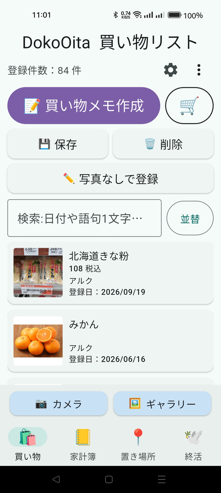
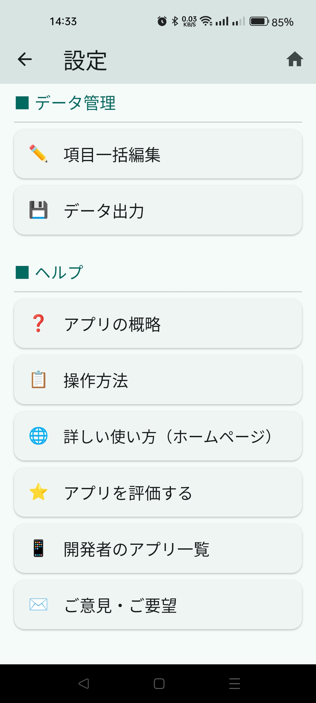
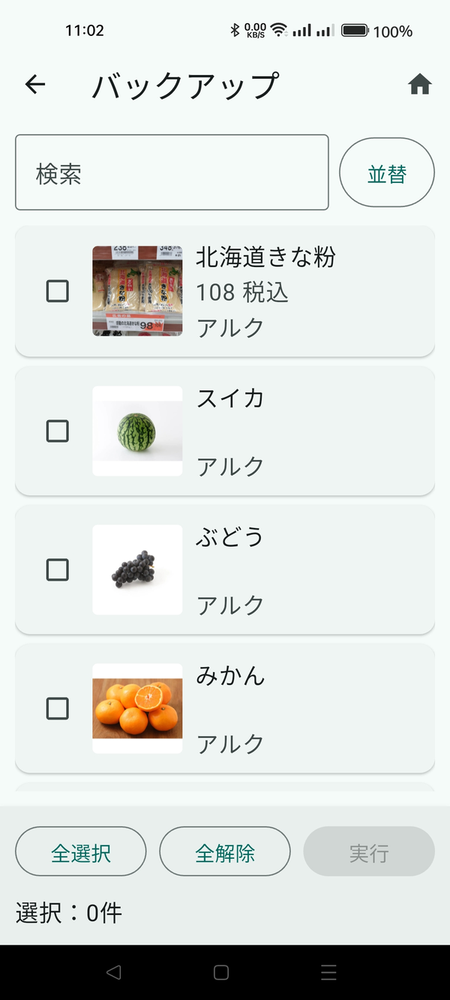
🛍️ 買い物
🛍️ Shopping
🛍️ 쇼핑
🛍️ 购物
🛍️ 購物
よく行くお店の品物から、今日の買い物メモを作ります。
You make today's shopping memo from the items of the stores you often visit.
자주 가는 매장의 품목으로 오늘의 쇼핑 메모를 만듭니다.
用常去商店的商品，制作今天的购物备忘。
用常去商店的商品，製作今天的購物備忘。
- お店の名前を登録するはじめに、よく買い物をするお店の名前を登録します（基本素材のインポート）。行きつけのお店が複数あるときは、全部登録します（店舗名の欄は、はじめ3つ。「店舗を追加」を押すと、いくつでも増やせます）。写真は要りません。Register the store namesFirst, register the names of the stores where you often shop (Import Basic Materials). If you have several regular stores, register them all (there are 3 store name fields at first. Press "Add Store" to add as many as you like). No photos are needed.매장 이름을 등록한다먼저 자주 장을 보는 매장의 이름을 등록합니다(기본 소재 가져오기). 자주 가는 매장이 여러 곳이면 모두 등록합니다(매장명 입력란은 처음에 3개입니다. "매장 추가"를 누르면 얼마든지 늘릴 수 있습니다). 사진은 필요 없습니다.登记商店的名称首先，登记经常购物的商店名称（导入基本素材）。有多家常去的商店时，请全部登记（店铺名称栏一开始有3个。按“添加店铺”可以增加任意多个）。不需要照片。登記商店的名稱首先，登記經常購物的商店名稱（匯入基本素材）。有多家常去的商店時，請全部登記（店鋪名稱欄一開始有3個。按「新增店鋪」可以增加任意多個）。不需要照片。
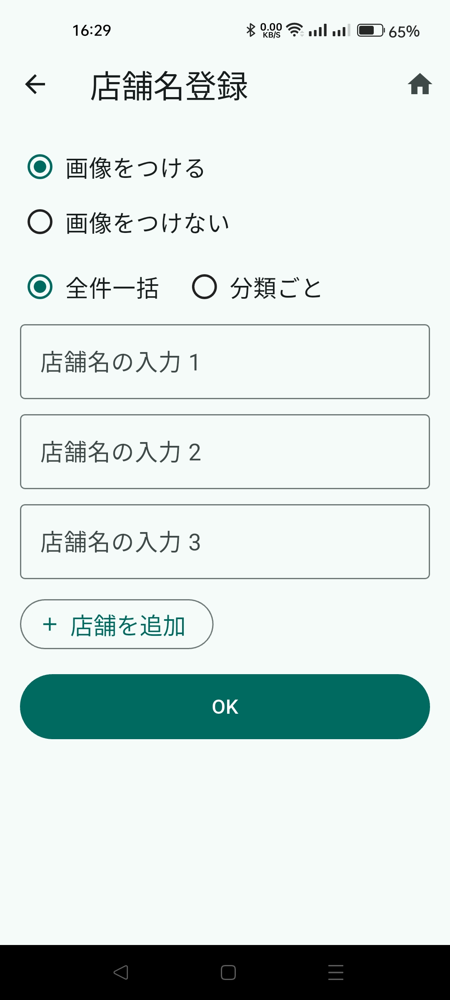
- 画像をつけるか、つけないかを選ぶお店の名前を入れる画面の上で、「画像をつける」か「画像をつけない」かを選べます。「画像をつけない」を選ぶと、品名とカテゴリーだけが登録されます。画像は、あとから、ホームの右上の「⋮」の「店舗名入りの画像をつける」で、お店を選んでつけられます（画像が無くて、品名が基本素材と同じ品物にだけ、店舗名を書き込んだ画像をつけます。すでに画像のある品物は、そのままです）。Choose with or without imagesOn the screen where you enter store names, you can choose "With images" or "Without images". If you choose "Without images", only item names and categories are registered. You can add images later: at the top right of the home screen, press "⋮" and "Add Store-Name Images", then choose a store (images with the store name written on them are added only to items that have no image and whose name is the same as a basic item. Items that already have an image are left as they are).이미지를 붙일지 말지 고른다매장 이름을 입력하는 화면 위에서 "이미지 붙이기"와 "이미지 붙이지 않기" 중에서 고를 수 있습니다. "이미지 붙이지 않기"를 고르면 품명과 카테고리만 등록됩니다. 이미지는 나중에 홈 오른쪽 위의 "⋮"에서 "매장명이 들어간 이미지 붙이기"로 매장을 골라 붙일 수 있습니다(이미지가 없고 품명이 기본 소재와 같은 품목에만 매장명을 적어 넣은 이미지를 붙입니다. 이미 이미지가 있는 품목은 그대로입니다).选择添加图片或不添加在输入店铺名称的画面上方，可以选择“添加图片”或“不添加图片”。选择“不添加图片”，就只会登记品名和分类。图片可以之后在首页右上角“⋮”的“添加带店铺名的图片”里，选择商店后添加（只给没有图片、且品名与基本素材相同的商品添加写有店铺名称的图片。已经有图片的商品保持原样）。選擇新增圖片或不新增在輸入店鋪名稱的畫面上方，可以選擇「加入圖片」或「不加入圖片」。選擇「不加入圖片」，就只會登記品名和分類。圖片可以之後在首頁右上角「⋮」的「加入附店家名稱的圖片」裡，選擇商店後新增（只給沒有圖片、且品名與基本素材相同的商品新增寫有店鋪名稱的圖片。已經有圖片的商品保持原樣）。

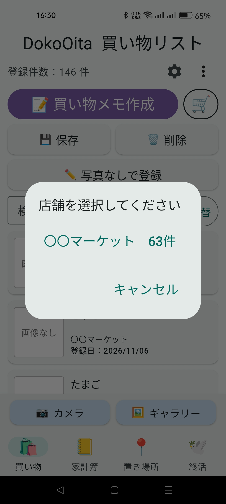
- 品物を登録する品物は、「✏️写真なしで登録」か、📷カメラ・🖼️ギャラリーで登録します。Register itemsRegister an item with "✏️ Add without photo", or with 📷 Camera / 🖼️ Gallery.품목을 등록한다품목은 "✏️ 사진 없이 등록" 또는 📷 카메라・🖼️ 갤러리로 등록합니다.登记商品商品可以用“✏️ 无照片登记”，或用📷相机・🖼️相册登记。登記商品商品可以用「✏️ 不附照片登錄」，或用📷相機・🖼️相簿登記。
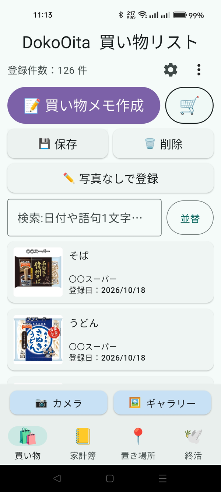
- 買い物メモ作成を押す買い物の日は、ホームの「📝買い物メモ作成」を押します。最初に、「店舗あり（店舗ごと）」か「店舗なし（全店舗まとめ）」を選びます。ふだんは「店舗あり」です。Press "Create Shopping Memo"On shopping day, press "📝 Create Shopping Memo" on the home screen. First choose "By store" or "Without stores (all stores combined)". Usually it is "By store".쇼핑 메모 작성을 누른다장보는 날에는 홈의 "📝 쇼핑 메모 작성"을 누릅니다. 먼저 "매장별"과 "매장 없음 (전체 매장 합침)" 중에서 고릅니다. 평소에는 "매장별"입니다.按“创建购物备忘”购物那天，按首页的“📝 创建购物备忘”。首先选择“按店铺”或“不分店铺（全部店铺合并）”。平时选“按店铺”。按「建立購物備忘」購物那天，按首頁的「📝 建立購物備忘」。首先選擇「依店家」或「不分店家（全部店家合併）」。平時選「依店家」。
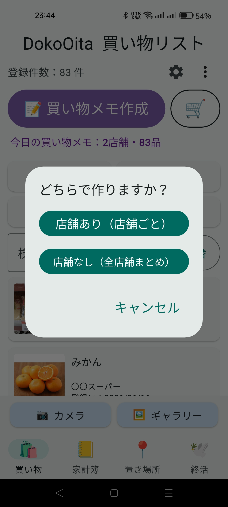
- お店を1つ選ぶ（店舗ありのとき）「店舗を選択してください」と出るので、買い物に行くお店を1つ選びます。Choose one store (when with stores)"Please select a store" appears, so choose the one store you are going shopping at.매장을 하나 고른다(매장별일 때)"매장을 선택해 주세요"라고 나오면 장보러 갈 매장을 하나 고릅니다.选择一家商店（按店铺时）出现“请选择店铺”，请选择要去购物的一家商店。選擇一家商店（按店鋪時）出現「請選擇店鋪」，請選擇要去購物的一家商店。
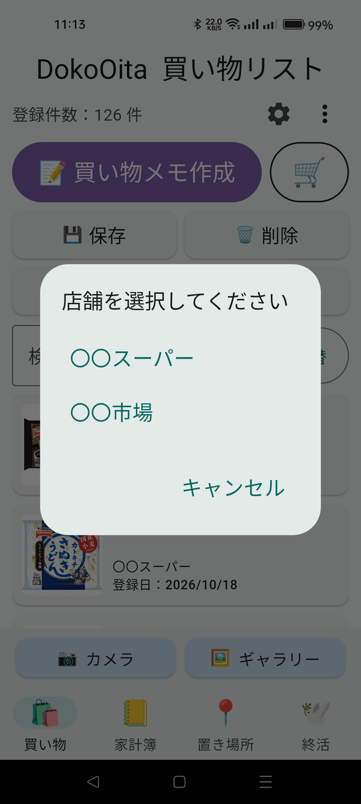
- 買う物に☑を付けるそのお店の品物が並ぶので、買う物に☑を付けて「OK」を押します（「全選択」「全解除」も使えます）。上の検索窓で品物を探したり（漢字・ひらがな・カタカナのどれでも見つかります）、カテゴリーの名前を押して、そのカテゴリーだけに絞ったりもできます。「選択〇件／全〇件」で、☑の数が分かります。Check ☑ the things to buyThe items of that store are listed, so check ☑ what you want to buy and press "OK" ("Select all" and "Clear all" can also be used). You can search for an item in the search box at the top (it is found whether you type kanji, hiragana or katakana), or press a category name to narrow down to that category only. The number of ☑ is shown as "Selected N of N items".살 물건에 ☑를 한다그 매장의 품목이 나열되면 살 물건에 ☑를 하고 "확인"을 누릅니다("모두 선택"・"모두 해제"도 사용할 수 있습니다). 위의 검색창에서 품목을 찾거나(한자・히라가나・가타카나 어느 쪽으로도 찾을 수 있습니다), 카테고리 이름을 눌러 그 카테고리만 골라 볼 수도 있습니다. "선택 N개 / 전체 N개"로 ☑의 수를 알 수 있습니다.给要买的东西打☑该商店的商品会排列出来，给要买的东西打☑，然后按“确定”（也可以用“全选”“取消全选”）。可以在上面的搜索框里查找商品（用汉字・平假名・片假名哪种都能找到），也可以按分类名称，只筛选出那个分类。“已选 N 件 / 共 N 件”可以看到☑的数量。給要買的東西打☑該商店的商品會排列出來，給要買的東西打☑，然後按「確定」（也可以用「全選」「取消全選」）。可以在上面的搜尋框裡搜尋商品（用漢字・平假名・片假名哪種都能找到），也可以按分類名稱，只篩選出那個分類。「已選 N 件 / 共 N 件」可以看到☑的數量。
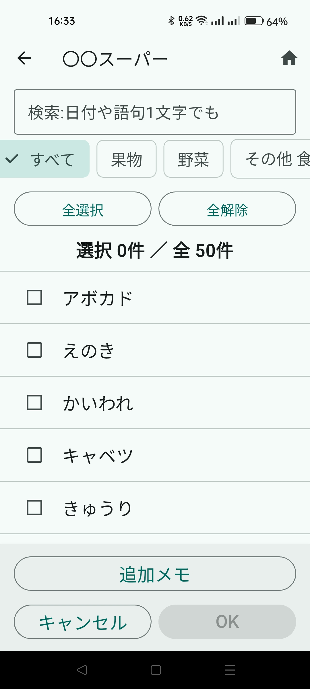
- 追加メモを書く（任意）品物を選ぶ画面の下の「追加メモ」で、そのお店の追加メモも書けます（店舗なしのときは「店舗なし追加メモ」）。書いたあと、「OK」を押すと、買い物メモに載ります。☑が1つもなくても、メモだけで「OK」を押せます（メモだけの買い物メモができます）。入力の画面で「キャンセル」を押したり、画面の外を押したりすると、書いたメモは使われません。Write an additional memo (optional)With "Additional memo" at the bottom of the item selection screen, you can also write an additional memo for that store ("[No-Store Additional Memo]" when without stores). After writing, press "OK" and it appears on the shopping memo. Even with no ☑ at all you can press "OK" with only a memo (you get a shopping memo with just the memo). If you press "Cancel" on the input screen or tap outside the screen, what you wrote is not used.추가 메모를 쓴다(선택)품목을 고르는 화면 아래의 "추가 메모"로 그 매장의 추가 메모도 쓸 수 있습니다(매장 없음일 때는 "매장 없음 추가 메모"). 쓴 뒤 "확인"을 누르면 쇼핑 메모에 실립니다. ☑가 하나도 없어도 메모만으로 "확인"을 누를 수 있습니다(메모만 있는 쇼핑 메모가 만들어집니다). 입력 화면에서 "취소"를 누르거나 화면 바깥을 누르면 쓴 메모는 사용되지 않습니다.写附加备注（可选）在选择商品的画面下方的“附加备注”里，也可以写该商店的附加备注（不分店铺时是“无店铺附加备注”）。写完后按“确定”，就会出现在购物备忘里。即使一个☑都没有，也可以只带备注按“确定”（会生成只有备注的购物备忘）。在输入画面按“取消”或点击画面外面，写的备注不会被使用。寫附加備註（可選）在選擇商品的畫面下方的「附加備註」裡，也可以寫該商店的附加備註（不分店鋪時是「無店家附加備註」）。寫完後按「確定」，就會出現在購物備忘裡。即使一個☑都沒有，也可以只帶備註按「確定」（會生成只有備註的購物備忘）。在輸入畫面按「取消」或點選畫面外面，寫的備註不會被使用。
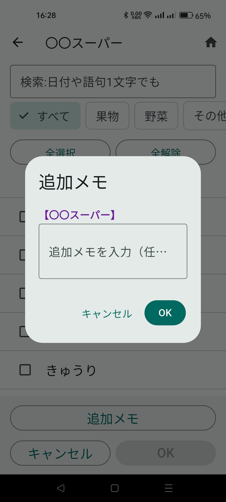
- 今日の買い物メモができる今日の買い物メモが出来ます。品物は、はじめ「カテゴリーの順（売り場の順）→50音順」に並びます（カテゴリーは、下の「カテゴリーで売り場の順に整える」で決めます）。買った物は、右になぞって線で消します（左になぞると戻ります）。メモの右上の「取消し解除」を押すと、そのお店の線がすべて元に戻ります（線を引いた追加メモの行は、メモから消えます）。Today's shopping memo is madeToday's shopping memo appears. At first the items line up in "category order (store section order) → alphabetical (50-sound) order" (categories are decided in "Arrange by store sections with categories" below). Swipe right to cross out what you bought (swipe left to undo). Press "Remove strikethrough" at the top right of the memo and all the lines of that store return to normal (the additional memo lines that had been crossed out disappear from the memo).오늘의 쇼핑 메모가 완성된다오늘의 쇼핑 메모가 만들어집니다. 품목은 처음에 "카테고리 순서(매장 코너 순서)→가나다 순"으로 정렬됩니다(카테고리는 아래의 "카테고리로 매장 코너 순서에 맞춘다"에서 정합니다). 산 물건은 오른쪽으로 밀어 줄을 그어 지웁니다(왼쪽으로 밀면 되돌아옵니다). 메모 오른쪽 위의 "취소선 해제"를 누르면 그 매장의 줄이 모두 원래대로 돌아갑니다(줄을 그은 추가 메모 줄은 메모에서 사라집니다).做好今天的购物备忘今天的购物备忘就做好了。商品一开始按“分类的顺序（卖场的顺序）→五十音顺序”排列（分类在下面的“用分类按卖场顺序整理”里设定）。买到的东西向右滑动划线消掉（向左滑动可恢复）。按备忘右上角的“撤销删除线”，该商店所有的划线都会恢复原状（划了线的附加备注行，会从备忘中消失）。做好今天的購物備忘今天的購物備忘就做好了。商品一開始按「分類的順序（賣場的順序）→五十音順序」排列（分類在下面的「用分類按賣場順序整理」裡設定）。買到的東西向右滑動劃線消掉（向左滑動可恢復）。按備忘右上角的「撤銷刪除線」，該商店所有的劃線都會恢復原狀（劃了線的附加備註行，會從備忘中消失）。
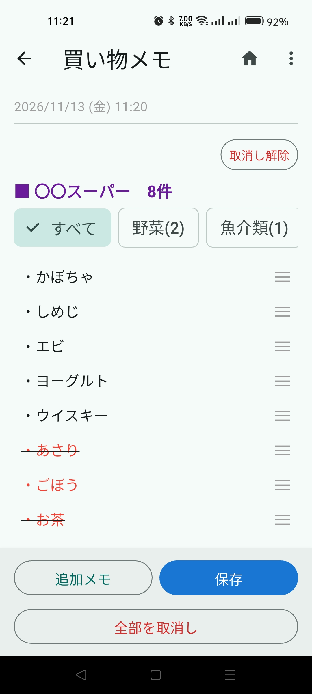
- カテゴリーで絞って見るお店の名前の下に、カテゴリーのボタン（例：すべて・果物(2)・野菜(3)）が出ます。押すと、そのカテゴリーの品物だけが出ます。続けて別のカテゴリーを押すと、一緒に出ます（もう一度押すと外れます。「すべて」で元に戻ります）。かっこの中の数字は、まだ買っていない件数です。全部買うと「✓」が付いて、薄く出ます。いまいる売り場のカテゴリーを選べば、一覧が短くなって見やすくなります。カテゴリーを選んだままでも、「≡」で並べ替えたり、並び順を記憶・呼出したりできます。お店が2つ以上のときは、お店ごとに選べます（店舗なしのメモにも出ます）。カテゴリーが1種類しかないお店には、ボタンは出ません。View by categoryUnder the store name, category buttons appear (example: All, Fruit (2), Vegetables (3)). Press one and only the items of that category appear. Then press other categories to show them together (press again to remove one; press "All" to go back). The number in parentheses is how many you have not bought yet. When everything is bought, a "✓" appears and it is shown faintly. If you choose the category of the section you are in, the list becomes shorter and easier to see. Even while a category is selected, you can reorder with "≡" and remember or recall the order. When there are two or more stores, you can choose for each store (it also appears on a memo without stores). A store that has only one category shows no buttons.카테고리로 좁혀 본다매장 이름 아래에 카테고리 버튼(예: 전체・과일(2)・채소(3))이 나옵니다. 누르면 그 카테고리의 품목만 나옵니다. 이어서 다른 카테고리를 누르면 함께 나옵니다(다시 누르면 해제되고, "전체"로 원래대로 돌아갑니다). 괄호 안의 숫자는 아직 사지 않은 건수입니다. 모두 사면 "✓"가 붙고 흐리게 표시됩니다. 지금 있는 코너의 카테고리를 고르면 목록이 짧아져 보기 쉬워집니다. 카테고리를 고른 채로도 "≡"로 정렬하거나 정렬 순서를 기억・불러올 수 있습니다. 매장이 둘 이상일 때는 매장별로 고를 수 있습니다(매장 없음 메모에도 표시됩니다). 카테고리가 한 종류뿐인 매장에는 버튼이 나오지 않습니다.按分类筛选查看在商店名称下面，会出现分类按钮（例：全部・水果(2)・蔬菜(3)）。按一下，就只显示该分类的商品。接着再按其他分类，会一起显示（再按一次则取消；按“全部”恢复原状）。括号里的数字，是还没买的数量。全部买完后会出现“✓”，并淡淡地显示。选择自己所在卖场的分类，列表就会变短，更容易看。选着分类时，也可以用“≡”排序，以及记住・恢复排列顺序。有两家以上商店时，可以按商店分别选择（不分店铺的备忘里也会出现）。只有一种分类的商店，不会出现按钮。按分類篩選檢視在商店名稱下面，會出現分類按鈕（例：全部・水果(2)・蔬菜(3)）。按一下，就只顯示該分類的商品。接著再按其他分類，會一起顯示（再按一次則取消；按「全部」恢復原狀）。括號裡的數字，是還沒買的數量。全部買完後會出現「✓」，並淡淡地顯示。選擇自己所在賣場的分類，列表就會變短，更容易看。選著分類時，也可以用「≡」排序，以及記住・恢復排列順序。有兩家以上商店時，可以按商店分別選擇（不分店鋪的備忘裡也會出現）。只有一種分類的商店，不會出現按鈕。
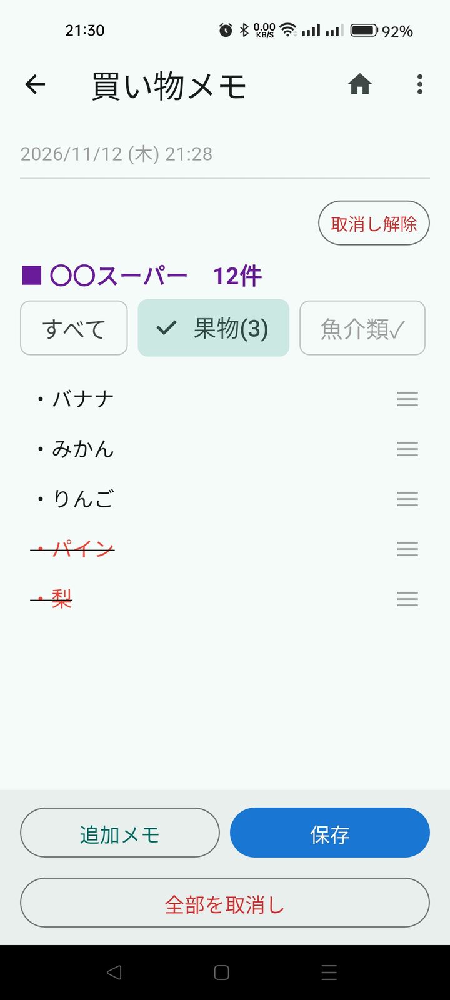
- （店舗なしのとき）全店舗をまとめたメモを作る「買い物メモ作成」で「店舗なし（全店舗まとめ）」を選ぶと、全部のお店の品物が1つの一覧に並びます。同じ品名は1つにまとまり、店舗名は出ません。買う物に☑を付けてOKを押すと、カテゴリーの順に並んだ1枚のメモができます。品物が1つもないときは「データがありません」と出ます。(When without stores) Make a memo of all stores combinedIf you choose "Without stores (all stores combined)" in "Create Shopping Memo", the items of all stores line up in one list. Items with the same name become one, and store names are not shown. Check the things to buy and press OK, and you get one memo arranged in category order. If there are no items at all, "No data" appears.(매장 없음일 때) 전체 매장을 합친 메모를 만든다"쇼핑 메모 작성"에서 "매장 없음 (전체 매장 합침)"을 선택하면 모든 매장의 품목이 하나의 목록에 나열됩니다. 같은 품명은 하나로 합쳐지고 매장명은 표시되지 않습니다. 살 물건에 ☑를 하고 확인을 누르면 카테고리 순서로 나열된 한 장의 메모가 만들어집니다. 품목이 하나도 없을 때는 "데이터 없음"라고 나옵니다.（不分店铺时）制作全部商店合并的备忘在“创建购物备忘”里选择“不分店铺（全部店铺合并）”，所有商店的商品就会排在一个列表里。同名商品合并为一个，不显示店铺名称。给要买的东西打☑并按确定，就会生成按分类顺序排列的一张备忘。一个商品都没有时，会显示“暂无数据”。（不分店鋪時）製作全部商店合併的備忘在「建立購物備忘」裡選擇「不分店家（全部店家合併）」，所有商店的商品就會排在一個列表裡。同名商品合併為一個，不顯示店鋪名稱。給要買的東西打☑並按確定，就會生成按分類順序排列的一張備忘。一個商品都沒有時，會顯示「沒有資料」。
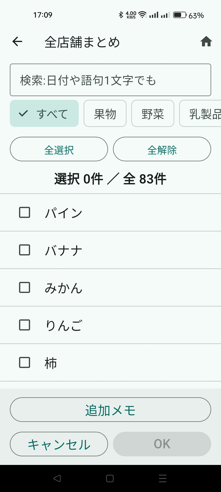
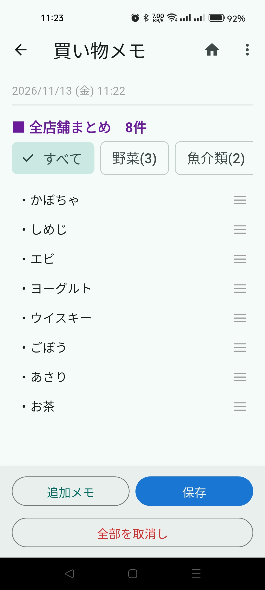
- 売り場を回る順番に並べ替える売り場を回る順番に、並べ替えます。品物の右はしの「≡」を押したまま、上や下へ動かします（ドラッグ＆ドロップ）。Rearrange in the order you walk through the storeRearrange in the order you walk through the store. Press and hold the "≡" at the right end of an item and move it up or down (drag and drop).매장을 도는 순서대로 정렬한다매장을 도는 순서대로 정렬합니다. 품목 오른쪽 끝의 "≡"를 누른 채 위나 아래로 움직입니다(드래그 앤 드롭).按逛卖场的顺序重新排列按逛卖场的顺序重新排列。按住商品右端的“≡”，向上或向下移动（拖放）。按逛賣場的順序重新排列按逛賣場的順序重新排列。按住商品右端的「≡」，向上或向下移動（拖放）。
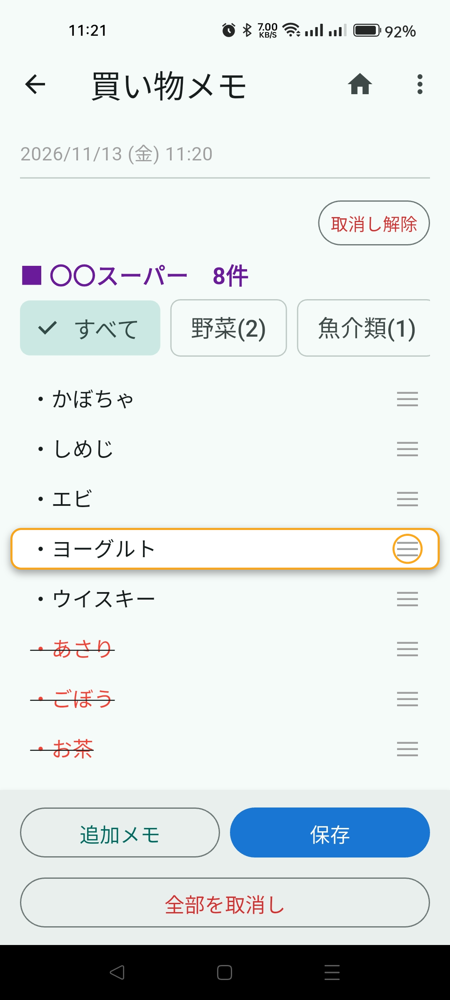
- 並び順を記憶する並べ終わったら、右上の「⋮」を押して「並び順を記憶」を選びます。次からは、「⋮」の「並び順の呼出」で、何度でも同じ順番に戻せます（お店ごとに記憶します）。50音順に戻したいときは、「⋮」の「50音順に並び替え」、カテゴリーの順に戻したいときは「カテゴリー順」を選びます。Remember the orderWhen you have finished arranging, press "⋮" at the top right and choose "Remember sort order". From then on, with "Recall order" under "⋮" you can return to the same order any number of times (it is remembered for each store). To go back to alphabetical order, choose "Sort alphabetically" under "⋮"; to go back to category order, choose "By category order".정렬 순서를 기억한다정렬이 끝나면 오른쪽 위의 "⋮"를 눌러 "정렬 순서 기억"을 선택합니다. 다음부터는 "⋮"의 "순서 불러오기"로 몇 번이든 같은 순서로 되돌릴 수 있습니다(매장별로 기억합니다). 가나다순으로 되돌리고 싶을 때는 "⋮"의 "가나다순 정렬", 카테고리 순서로 되돌리고 싶을 때는 "카테고리 순"을 선택합니다.记住排列顺序排好后，按右上角的“⋮”，选择“记住排列顺序”。之后，用“⋮”里的“恢复排列顺序”，可以随时恢复同样的顺序（按商店记住）。想恢复成五十音顺序时，选“⋮”里的“按字母顺序排列”；想恢复成分类顺序时，选“按分类顺序”。記住排列順序排好後，按右上角的「⋮」，選擇「記住排列順序」。之後，用「⋮」裡的「恢復排列順序」，可以隨時恢復同樣的順序（按商店記住）。想恢復成五十音順序時，選「⋮」裡的「按字母順序排列」；想恢復成分類順序時，選「依分類順序」。
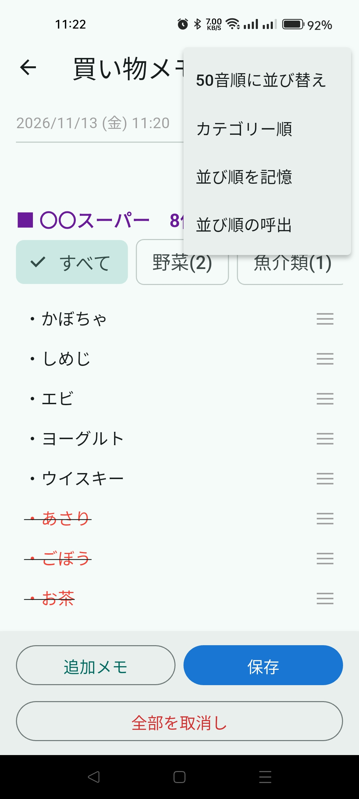
- メモを足す・保存する「追加メモ」を押すと、お店ごとの欄と【共通メモ】の欄が出るので、メモを足せます（書き直したあとは、「OK」で保存、「キャンセル」で元のままです）。また、「保存」で文字のファイルを保存したりできます。追加メモは、新しく買い物メモを作り始めたときに消えます（店舗ありのときは、選んだお店のメモだけ。店舗なしのときは、すべてのメモ）。Add notes and savePress "Additional memo" and fields for each store and a "[Common Memo]" field appear, so you can add notes (after rewriting, "OK" saves and "Cancel" keeps it as it was). You can also use "Save" to save a text file. Additional memos are cleared when you start making a new shopping memo (with stores: only the memo of the chosen store; without stores: all memos).메모를 덧붙이고 저장한다"추가 메모"를 누르면 매장별 입력란과 "공통 메모" 입력란이 나오므로 메모를 덧붙일 수 있습니다(고쳐 쓴 뒤에는 "확인"으로 저장, "취소"로 그대로 둡니다). 또 "저장"으로 텍스트 파일을 저장할 수도 있습니다. 추가 메모는 새로 쇼핑 메모를 만들기 시작할 때 지워집니다(매장별일 때는 선택한 매장의 메모만, 매장 없음일 때는 모든 메모).补充备注・保存按“附加备注”，会出现各商店的栏和“共同备注”的栏，可以补充备注（改写后，“确定”保存，“取消”保持原样）。另外，用“保存”可以保存文本文件。附加备注会在开始制作新的购物备忘时清除（按店铺时，只清除所选商店的备注；不分店铺时，清除所有备注）。補充備註・儲存按「附加備註」，會出現各商店的欄和「共同備註」的欄，可以補充備註（改寫後，「確定」儲存，「取消」保持原樣）。另外，用「儲存」可以儲存文字檔案。附加備註會在開始製作新的購物備忘時清除（按店鋪時，只清除所選商店的備註；不分店鋪時，清除所有備註）。
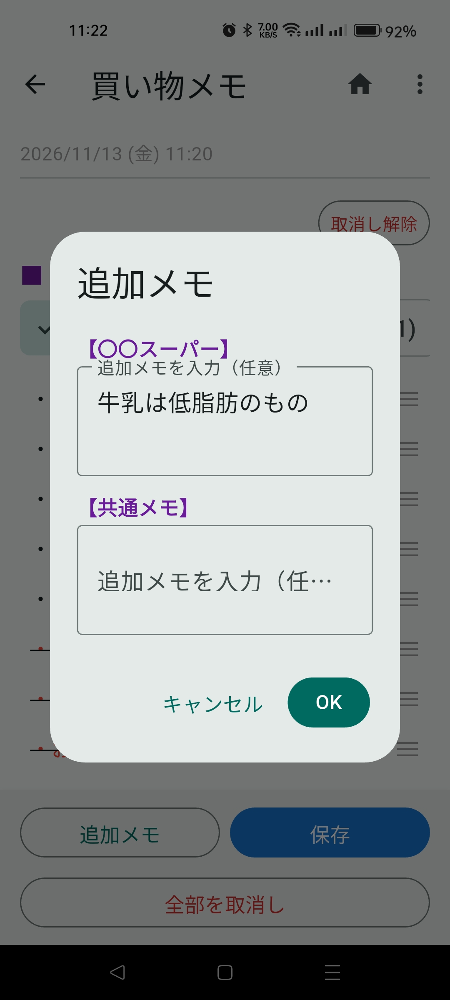
- 買い物が終わったら全部を取消し買い物が終わったら、いちばん下の「全部を取消し」を押します。☑・線・追加メモがすべて消えて、ホームに戻ります（記憶した並び順は消えません）。When shopping is done, "Cancel All"When you have finished shopping, press "Cancel All" at the very bottom. All ☑, lines and additional memos are cleared and you return to the home screen (the remembered order is not cleared).장보기가 끝나면 "모두 취소"장보기가 끝나면 맨 아래의 "모두 취소"를 누릅니다. ☑・줄・추가 메모가 모두 지워지고 홈으로 돌아갑니다(기억한 정렬 순서는 지워지지 않습니다).购物结束后“全部取消”购物结束后，按最下面的“全部取消”。☑・划线・附加备注全部清除，并返回首页（记住的排列顺序不会消失）。購物結束後「全部取消」購物結束後，按最下面的「全部取消」。☑・劃線・附加備註全部清除，並返回首頁（記住的排列順序不會消失）。
- 使わない品物をかくす（非表示リスト）品物の詳細画面で「非表示」に☑を付けると、その品物は、ホームの一覧と買い物メモから隠れます（消えてはいません）。隠すと「今日買う✓」も外れます。戻したあと買い物メモに入れるときは、もう一度☑を付けてください。ホームの右上の「⋮」から「非表示リスト」を押すと、「①リスト表示」と「②リスト追加」が選べます。Hide items you do not use (Hidden List)If you check "Hide" on the item's detail screen, that item is hidden from the home list and from the shopping memo (it is not deleted). When you hide it, "Buy today" ✓ is also removed. To put it on a shopping memo after restoring it, check it again. If you press "Hidden List" from "⋮" at the top right of the home screen, you can choose "① List view" or "② Add to hidden list".쓰지 않는 품목을 숨긴다(숨김 목록)품목의 상세 화면에서 "숨기기"에 ☑를 하면 그 품목은 홈의 목록과 쇼핑 메모에서 숨겨집니다(삭제된 것은 아닙니다). 숨기면 "오늘 살 것" ✓도 해제됩니다. 되돌린 뒤 쇼핑 메모에 넣을 때는 다시 ☑를 해 주세요. 홈 오른쪽 위의 "⋮"에서 "숨김 목록"을 누르면 "① 목록 보기"와 "② 숨김 목록에 추가"를 고를 수 있습니다.隐藏不用的商品（隐藏列表）在商品的详情画面给“隐藏”打☑，该商品就会从首页的列表和购物备忘中隐藏（并没有删除）。隐藏后，“今天要买”✓也会被取消。恢复后要放进购物备忘时，请再次打☑。按首页右上角“⋮”里的“隐藏列表”，可以选择“① 查看列表”和“② 添加到隐藏列表”。隱藏不用的商品（隱藏列表）在商品的詳情畫面給「隱藏」打☑，該商品就會從首頁的列表和購物備忘中隱藏（並沒有刪除）。隱藏後，「今天要買」✓也會被取消。恢復後要放進購物備忘時，請再次打☑。按首頁右上角「⋮」裡的「隱藏清單」，可以選擇「① 查看清單」和「② 加入隱藏清單」。
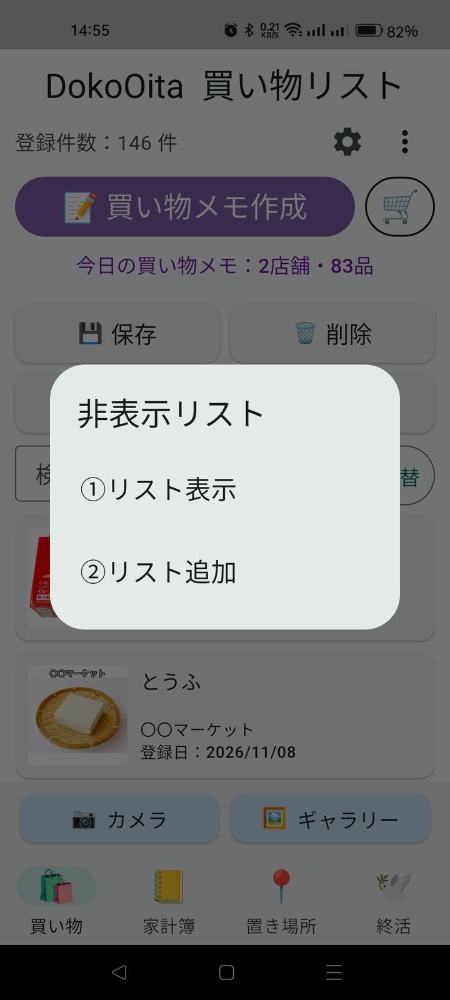
- ①リスト表示（隠した品物を見る・戻す）隠した品物が、お店ごと、その中のカテゴリーごとに並びます（お店は50音順、カテゴリーはそのお店で登録した順です）。「店舗で絞る」「カテゴリーで絞る」で、見たいものだけに絞れます（複数選べます）。お店やカテゴリーの名前の行を押すと、閉じたり開いたりできます。☑を付けて「リストに戻す」を押すと、ホームの一覧に戻ります（10秒の間は「元に戻す」で取り消せます）。「保存」で、文字のファイルにもできます。① List view (see and restore hidden items)Hidden items are arranged by store and, within it, by category (stores in alphabetical order, categories in the order registered for that store). With "Filter by store" and "Filter by category" you can narrow down to what you want to see (you can choose several). Press a store or category name row to close or open it. Check ☑ and press "Restore to List" and they return to the home list (for 10 seconds you can cancel with "Undo"). You can also save it as a text file with "Save".① 목록 보기 (숨긴 품목 보기・되돌리기)숨긴 품목이 매장별, 그 안의 카테고리별로 나열됩니다(매장은 가나다순, 카테고리는 그 매장에서 등록한 순서입니다). "매장으로 좁히기"와 "카테고리로 좁히기"로 보고 싶은 것만 골라 볼 수 있습니다(여러 개 선택 가능). 매장이나 카테고리 이름 줄을 누르면 접거나 펼 수 있습니다. ☑를 하고 "목록으로 되돌리기"를 누르면 홈의 목록으로 돌아갑니다(10초 동안은 "되돌리기"로 취소할 수 있습니다). "저장"으로 텍스트 파일로 만들 수도 있습니다.① 查看列表（查看・恢复隐藏的商品）隐藏的商品，按商店、再按其中的分类排列（商店按五十音顺序，分类按该商店登记的顺序）。用“按店铺筛选”“按分类筛选”，可以只筛选出想看的（可多选）。按商店或分类名称的行，可以收起或展开。打☑后按“恢复到列表”，就会回到首页的列表（10秒内可用“撤销”撤销）。也可以用“保存”保存为文本文件。① 查看清單（檢視・恢復隱藏的商品）隱藏的商品，按商店、再按其中的分類排列（商店按五十音順序，分類按該商店登記的順序）。用「依店家篩選」「依分類篩選」，可以只篩選出想看的（可多選）。按商店或分類名稱的行，可以收起或展開。打☑後按「還原到清單」，就會回到首頁的列表（10秒內可用「復原」撤銷）。也可以用「儲存」儲存為文字檔案。
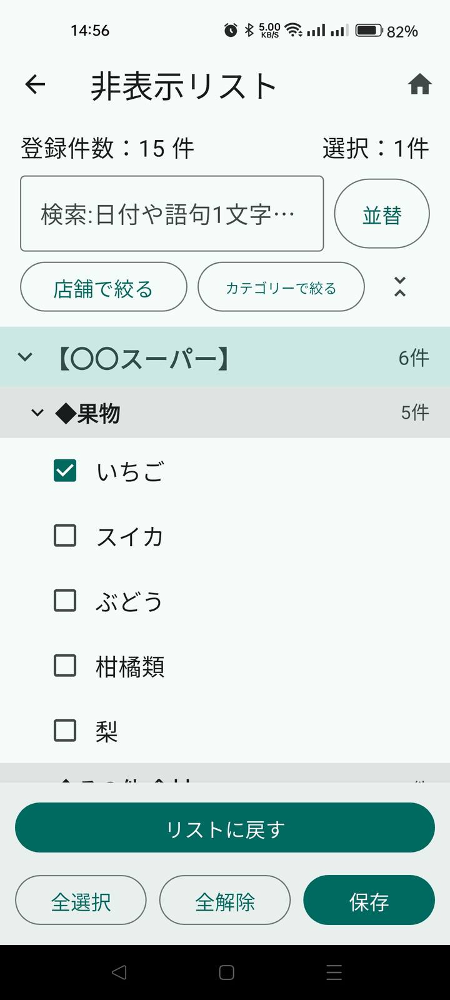
- ②リスト追加（まとめて隠す・戻す）お店を1つ選ぶと、そのお店の品物が全部並びます。☑を付けた品物が隠れ、☑を外した品物は元に戻ります。「◆カテゴリー名」の行を押すと、そのカテゴリーをまとめて切り替えられます。「OK」を押すと、まとめて反映します（「戻る」「キャンセル」では反映されません）。② Add to hidden list (hide or restore in bulk)When you choose one store, all that store's items are listed. Checked ☑ items are hidden, and items with ☑ removed are restored. Press a "◆ category name" row and you can switch that whole category at once. Press "OK" and everything is applied at once (it is not applied with "Back" or "Cancel").② 숨김 목록에 추가 (한꺼번에 숨기기・되돌리기)매장을 하나 고르면 그 매장의 품목이 모두 나열됩니다. ☑한 품목은 숨겨지고, ☑를 해제한 품목은 원래대로 돌아갑니다. "◆카테고리 이름" 줄을 누르면 그 카테고리를 한꺼번에 전환할 수 있습니다. "확인"을 누르면 한꺼번에 반영됩니다("뒤로"・"취소"로는 반영되지 않습니다).② 添加到隐藏列表（一次性隐藏・恢复）选择一家商店后，该商店的所有商品都会排列出来。打☑的商品被隐藏，取消☑的商品恢复原状。按“◆分类名称”的行，可以一次性切换该分类。按“确定”，就会一次性生效（按“返回”“取消”不会生效）。② 加入隱藏清單（一次性隱藏・恢復）選擇一家商店後，該商店的所有商品都會排列出來。打☑的商品被隱藏，取消☑的商品恢復原狀。按「◆分類名稱」的行，可以一次性切換該分類。按「確定」，就會一次性生效（按「返回」「取消」不會生效）。
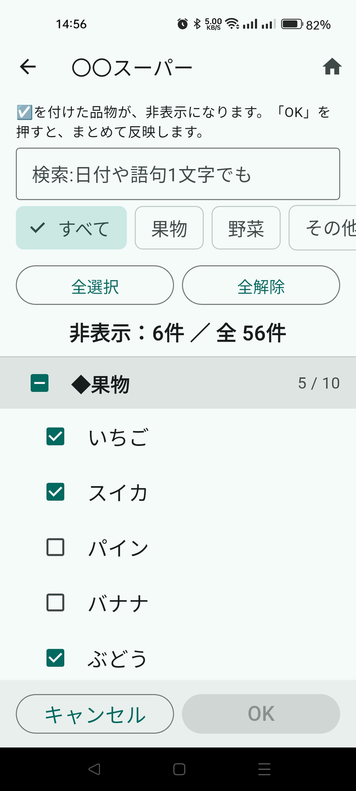
あわせて知っておくと便利なこと
Handy things to know
알아 두면 편리한 것
顺便了解一下，会更方便
順便了解一下，會更方便
- ホームの🛒アイコンを押すと「今日の買い物メモ」（「今日買う✓」の品物のメモ）が開けます。検索窓が空のときは、「店舗あり」か「店舗なし」を選びます。「店舗あり」では、メモに入れるお店に☑を付けます（複数のお店を選べます）。「今日買う✓」の品物が無くても、追加メモがあれば開けます。品物も追加メモも無いときは「データがありません」と出ます。
- If you press the 🛒 icon on the home screen, "Today's shopping memo" (the memo of items marked "Buy today" ✓) opens. When the search box is empty, choose "By store" or "No store". With "By store", check ☑ the stores to include in the memo (you can choose several stores). Even without items marked "Buy today" ✓ it opens if there is an additional memo. If there are no items and no additional memo, "No data" appears.
- 홈의 🛒 아이콘을 누르면 "오늘의 쇼핑 메모"("오늘 살 것" ✓ 품목의 메모)를 열 수 있습니다. 검색창이 비어 있을 때는 "매장별" 또는 "매장 없음"을 선택합니다. "매장별"에서는 메모에 넣을 매장에 ☑를 합니다(여러 매장을 선택할 수 있습니다). "오늘 살 것" ✓ 품목이 없어도 추가 메모가 있으면 열 수 있습니다. 품목도 추가 메모도 없을 때는 "데이터 없음"라고 나옵니다.
- 按首页的🛒图标，可以打开“今天的购物备忘”（“今天要买”✓商品的备忘）。搜索框为空时，选择“按店铺”或“无店铺”。选择“按店铺”时，给要放进备忘的商店打☑（可以选择多家商店）。即使没有“今天要买”✓的商品，只要有附加备注也能打开。商品和附加备注都没有时，会显示“暂无数据”。
- 按首頁的🛒圖示，可以開啟「今天的購物備忘」（「今天要買」✓商品的備忘）。搜尋框為空時，選擇「依店家」或「無店家」。選擇「依店家」時，給要放進備忘的商店打☑（可以選擇多家商店）。即使沒有「今天要買」✓的商品，只要有附加備註也能開啟。商品和附加備註都沒有時，會顯示「沒有資料」。
- 1つのお店だけ表示したいときは、ホームの検索窓にそのお店の名前を入れて、「🛒」アイコンを押します。
- To show only one store, type that store's name in the search box on the home screen and press the "🛒" icon.
- 한 매장만 표시하고 싶을 때는 홈의 검색창에 그 매장의 이름을 입력하고 "🛒" 아이콘을 누릅니다.
- 只想显示一家商店时，在首页的搜索框里输入该商店的名称，按“🛒”图标。
- 只想顯示一家商店時，在首頁的搜尋框裡輸入該商店的名稱，按「🛒」圖示。
- 「並び順の記憶」と「カテゴリー」は、ZIPにも入ります。⚙設定の「データ出力」で「ZIPエクスポート（画像込み）」を行い、新しいスマホで「ZIPインポート」をすれば、並び順も引き継げます。
- The "remembered order" and "Categories" are also included in the ZIP. In ⚙ Settings, use "Data Export" and "ZIP Export (with images)", then run "ZIP Import" on the new phone, and the order is carried over too.
- "기억한 정렬 순서"와 "카테고리"는 ZIP에도 들어갑니다. ⚙ 설정의 "데이터 내보내기"에서 "ZIP 내보내기 (이미지 포함)"을 실행하고 새 휴대폰에서 "ZIP 가져오기"를 하면 정렬 순서도 옮길 수 있습니다.
- “记住的排列顺序”和“分类”也会包含在ZIP里。在⚙设置的“数据导出”里执行“ZIP导出（含图片）”，在新手机上执行“ZIP导入”，排列顺序也能转移过去。
- 「記住的排列順序」和「分類」也會包含在ZIP裡。在⚙設定的「資料導出」裡執行「ZIP匯出（含圖片）」，在新手機上執行「ZIP匯入」，排列順序也能轉移過去。
- ホームの右上の「⋮」から、カテゴリーの設定、非表示リスト（①リスト表示・②リスト追加）、基本素材のインポート、「店舗名入りの画像をつける」を開けます。
- From "⋮" at the top right of the home screen you can open the category settings, "Hidden List" ("① List view" / "② Add to hidden list"), Import Basic Materials, and "Add Store-Name Images".
- 홈 오른쪽 위의 "⋮"에서 카테고리 설정, "숨김 목록"("① 목록 보기"・"② 숨김 목록에 추가"), 기본 소재 가져오기, "매장명이 들어간 이미지 붙이기"를 열 수 있습니다.
- 从首页右上角的“⋮”，可以打开分类设置、“隐藏列表”（“① 查看列表”・“② 添加到隐藏列表”）、导入基本素材、“添加带店铺名的图片”。
- 從首頁右上角的「⋮」，可以開啟分類設定、「隱藏清單」（「① 查看清單」・「② 加入隱藏清單」）、匯入基本素材、「加入附店家名稱的圖片」。
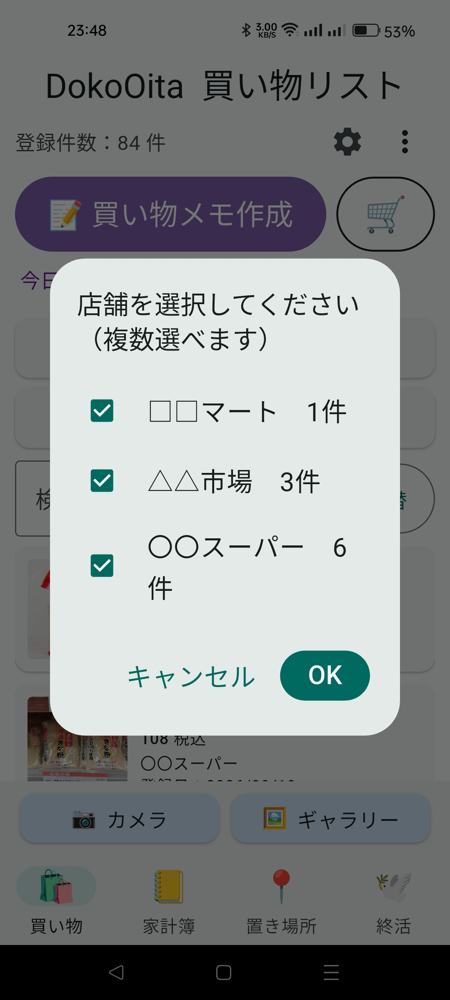
カテゴリーで売り場の順に整える
Arrange by store sections with categories
카테고리로 매장 코너 순서에 맞춘다
用分类按卖场顺序整理
用分類按賣場順序整理
品物を「果物・野菜・肉…」のように大まかに分けておくと、買い物メモの最初の並びが売り場の順になります。カテゴリーは、お店ごとに持てます（スーパーと薬局では、売り場が違うためです）。
If you roughly divide items like "fruit, vegetables, meat...", the first order of the shopping memo follows the store sections. Each store can have its own categories (because the sections of a supermarket and a pharmacy are different).
품목을 "과일・채소・고기…"처럼 대략 나눠 두면 쇼핑 메모의 처음 순서가 매장 코너 순서가 됩니다. 카테고리는 매장별로 가질 수 있습니다(슈퍼와 약국은 코너가 다르기 때문입니다).
把商品大致分成“水果・蔬菜・肉类…”等，购物备忘一开始的顺序就是卖场的顺序。分类可以按商店设置（因为超市和药店的卖场不同）。
把商品大致分成「水果・蔬菜・肉類…」等，購物備忘一開始的順序就是賣場的順序。分類可以按商店設定（因為超市和藥店的賣場不同）。
- カテゴリーを開くホームの右上の「⋮」から「カテゴリー」を選び、お店を選びます。そのお店のカテゴリーが並ぶ「カテゴリーの並べ替え」の画面が開きます（はじめは、果物・野菜・魚介類・肉類・乳製品・麺類・パン・飲料・その他食品の9つです）。Open the categoriesFrom "⋮" at the top right of the home screen choose "Categories" and choose a store. The "Arrange Categories" screen opens, listing that store's categories (at first there are 9: fruit, vegetables, seafood, meat, dairy, noodles, bread, drinks and other food).카테고리를 연다홈 오른쪽 위의 "⋮"에서 "카테고리"를 선택하고 매장을 고릅니다. 그 매장의 카테고리가 나열된 "카테고리 정렬" 화면이 열립니다(처음에는 과일・채소・어패류・육류・유제품・면류・빵・음료・기타 식품의 9개입니다).打开分类从首页右上角的“⋮”选择“分类”，再选择商店。会打开列出该商店分类的“分类排序”画面（一开始有9个：水果・蔬菜・水产・肉类・乳制品・面类・面包・饮料・其他食品）。開啟分類從首頁右上角的「⋮」選擇「分類」，再選擇商店。會開啟列出該商店分類的「分類排序」畫面（一開始有9個：水果・蔬菜・水產・肉類・乳製品・面類・麵包・飲料・其他食品）。
- 売り場の順に並べ替えるカテゴリーの右はしの「≡」を押したまま、上や下へ動かします。右上の「⋮」で、50音順への並べ替えや、並び順の記憶・呼び出しもできます。Arrange in the order of the store sectionsPress and hold the "≡" at the right end of a category and move it up or down. With "⋮" at the top right you can also sort alphabetically and remember or recall the order.매장 코너 순서로 정렬한다카테고리 오른쪽 끝의 "≡"를 누른 채 위나 아래로 움직입니다. 오른쪽 위의 "⋮"에서 가나다순 정렬이나 정렬 순서의 기억・불러오기도 할 수 있습니다.按卖场的顺序排列按住分类右端的“≡”，向上或向下移动。用右上角的“⋮”，还可以按五十音顺序排序，以及记住・恢复排列顺序。按賣場的順序排列按住分類右端的「≡」，向上或向下移動。用右上角的「⋮」，還可以按五十音順序排序，以及記住・恢復排列順序。
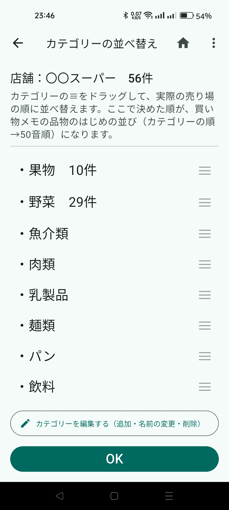
- カテゴリーを編集する「カテゴリーを編集する」を押すと、カテゴリーの追加・名前の変更・削除ができます。薬や雑貨など、食品以外も自由に足せます。Edit the categoriesPress "Edit Categories" and you can add, rename and delete categories. You can freely add non-food ones too, such as medicine and sundries.카테고리를 편집한다"카테고리 편집"을 누르면 카테고리의 추가・이름 변경・삭제를 할 수 있습니다. 약이나 잡화 등 식품 이외도 자유롭게 추가할 수 있습니다.编辑分类按“编辑分类”，可以添加分类、改名、删除。药品、杂货等食品以外的分类也可以自由添加。編輯分類按「編輯分類」，可以新增分類、改名、刪除。藥品、雜貨等食品以外的分類也可以自由新增。
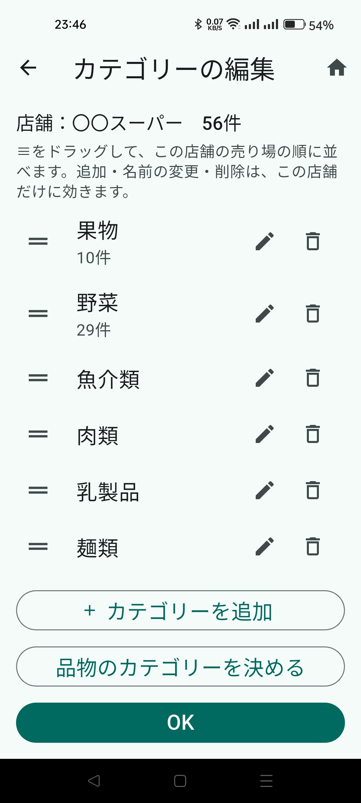
- 品物のカテゴリーを決める編集の画面の「品物のカテゴリーを決める」で、品物に☑を付けて、まとめてカテゴリーを決められます。決めなくても使えます（「未分類」になり、いちばん下に並びます）。Set the categories of itemsOn the edit screen, with "Set item categories" you can check items ☑ and set their categories all at once. It can be used without setting them ("Uncategorized" items line up at the very bottom).품목의 카테고리를 정한다편집 화면의 "품목 카테고리 정하기"에서 품목에 ☑를 해서 한꺼번에 카테고리를 정할 수 있습니다. 정하지 않아도 사용할 수 있습니다("미분류"가 되어 맨 아래에 나열됩니다).设置商品的分类在编辑画面的“设置商品分类”里，给商品打☑，可以一次性设置分类。不设置也能使用（会变成“未分类”，排在最下面）。設定商品的分類在編輯畫面的「設定商品分類」裡，給商品打☑，可以一次性設定分類。不設定也能使用（會變成「未分類」，排在最下面）。
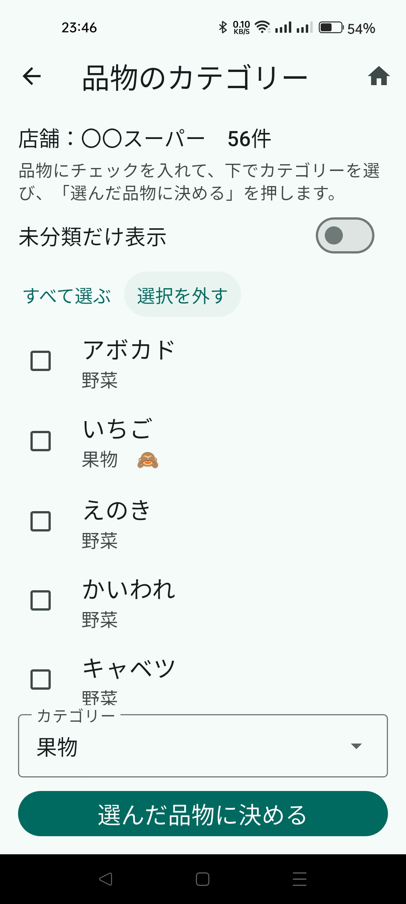
- 登録のときに選ぶ品物を登録・編集する画面にも、「カテゴリー」を選ぶ欄があります（買い物のみ。お店の名前を入れると、そのお店のカテゴリーが出ます）。Choose when registeringThe screen for registering or editing an item also has a field for choosing a "Categories" (Shopping only. When you enter a store name, that store's categories appear).등록할 때 고른다품목을 등록・편집하는 화면에도 "카테고리"를 고르는 칸이 있습니다(쇼핑 전용. 매장 이름을 입력하면 그 매장의 카테고리가 나옵니다).登记时选择在登记・编辑商品的画面里，也有选择“分类”的栏（仅限购物。输入店铺名称后，会出现该商店的分类）。登記時選擇在登記・編輯商品的畫面裡，也有選擇「分類」的欄（僅限購物。輸入店鋪名稱後，會出現該商店的分類）。
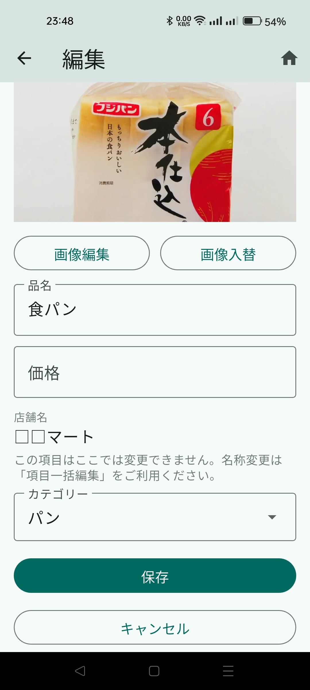
- お店の名前を一括編集で変えると、そのお店のカテゴリーの並びや、記憶した並び順も、新しい名前に引き継がれます。
- If you change a store name with bulk edit, that store's category order and remembered order are carried over to the new name.
- 매장 이름을 일괄 편집으로 바꾸면 그 매장의 카테고리 순서와 기억한 정렬 순서도 새 이름으로 이어집니다.
- 如果用批量编辑修改店铺名称，该商店的分类顺序和记住的排列顺序，也会沿用到新名称上。
- 如果用批次編輯修改店鋪名稱，該商店的分類順序和記住的排列順序，也會沿用到新名稱上。
- ホームの検索窓に、カテゴリー名を入れて探すこともできます。
- You can also search by typing a category name in the search box on the home screen.
- 홈의 검색창에 카테고리 이름을 입력해서 찾을 수도 있습니다.
- 也可以在首页的搜索框里输入分类名称来查找。
- 也可以在首頁的搜尋框裡輸入分類名稱來搜尋。
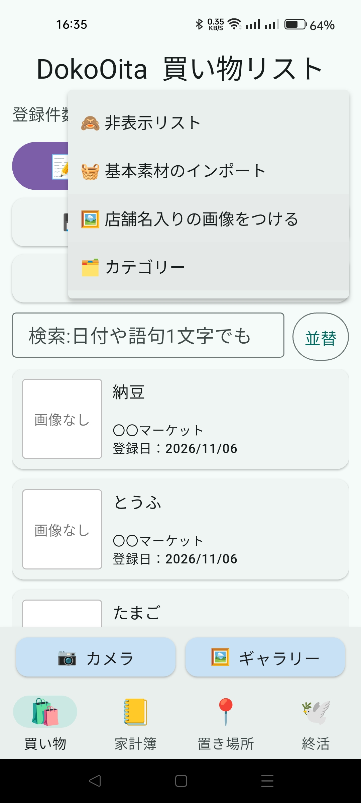
📒 家計簿
📒 Budget
📒 가계부
📒 记账
📒 記帳
レシートの管理と、家計簿の記録・集計です。
Managing receipts, and recording and totaling the household budget.
영수증 관리와 가계부의 기록・집계입니다.
收据的管理，以及记账的记录和统计。
收據的管理，以及記帳的記錄和統計。
レシート管理
Receipts
영수증 관리
收据管理
收據管理
- 🧾 レシート登録：レシートを撮ると、AIが店名・品名・金額を読み取ります（先に、⚙設定でAIのキーを登録します）。手入力もできます。
- 🧾 Register Receipt: take a photo of a receipt and the AI reads the store, items and prices (first register your AI key in ⚙ Settings). You can also type them in.
- 🧾 영수증 등록: 영수증을 찍으면 AI가 매장명・품명・금액을 읽어 줍니다(먼저 ⚙ 설정에서 AI 키를 등록합니다). 직접 입력도 할 수 있습니다.
- 🧾 登记收据：拍下收据，AI会读取店名・品名・金额（请先在⚙设置里登记AI密钥）。也可以手动输入。
- 🧾 登記收據：拍下收據，AI會讀取店名・品名・金額（請先在⚙設定裡登記AI金鑰）。也可以手動輸入。
- 📊 レシート集計・✏️ レシート編集：期間を決めて集計したり、直したりします。
- 📊 Receipt Summary · ✏️ Edit Receipt: total or correct receipts for a chosen period.
- 📊 영수증 집계・✏️ 영수증 편집: 기간을 정해 집계하거나 고칩니다.
- 📊 收据统计・✏️ 编辑收据：指定期间进行统计或修改。
- 📊 收據統計・✏️ 編輯收據：指定期間進行統計或修改。
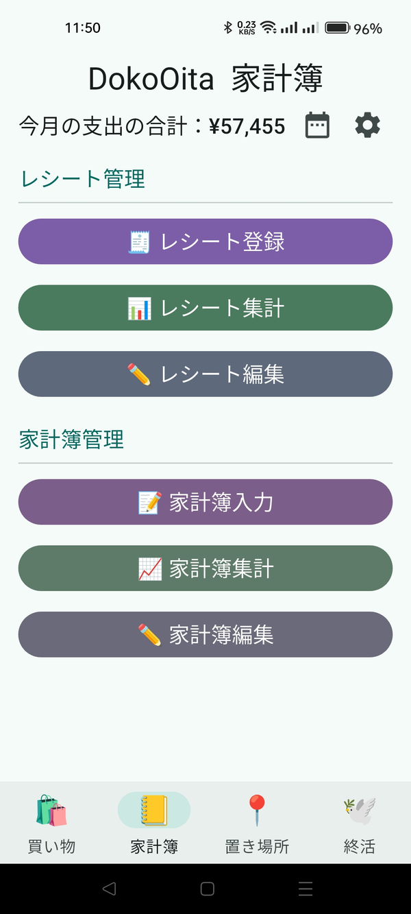
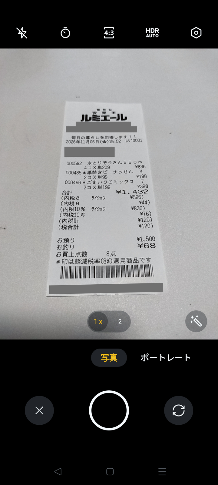
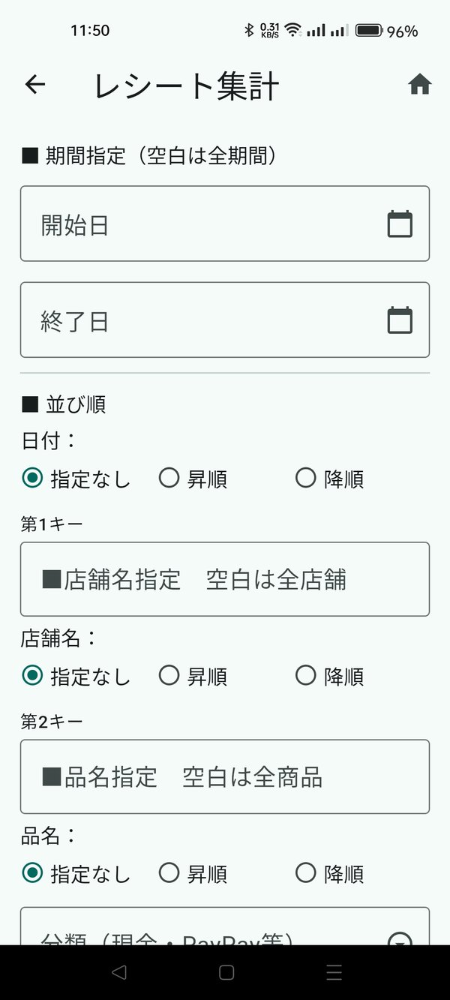
家計簿管理
Budget
가계부 관리
记账管理
記帳管理
- 📝 家計簿入力：支払先・日付・種別・金額を入れて、1件ずつ登録します。レシートから引き継ぐこともできます。
- 📝 Budget Entry: enter the payee, date, category and amount, and register one entry at a time. You can also carry data over from a receipt.
- 📝 가계부 입력: 지급처・날짜・종류・금액을 입력해서 한 건씩 등록합니다. 영수증에서 이어받을 수도 있습니다.
- 📝 记账输入：输入收款方・日期・类别・金额，一笔一笔登记。也可以沿用收据的内容。
- 📝 記帳輸入：輸入收款方・日期・類別・金額，一筆一筆登記。也可以沿用收據的內容。
- 📈 家計簿集計・✏️ 家計簿編集：集計や修正をします。
- 📈 Budget Summary · ✏️ Edit Budget: total or correct entries.
- 📈 가계부 집계・✏️ 가계부 편집: 집계나 수정을 합니다.
- 📈 记账统计・✏️ 编辑记账：进行统计或修改。
- 📈 記帳統計・✏️ 編輯記帳：進行統計或修改。
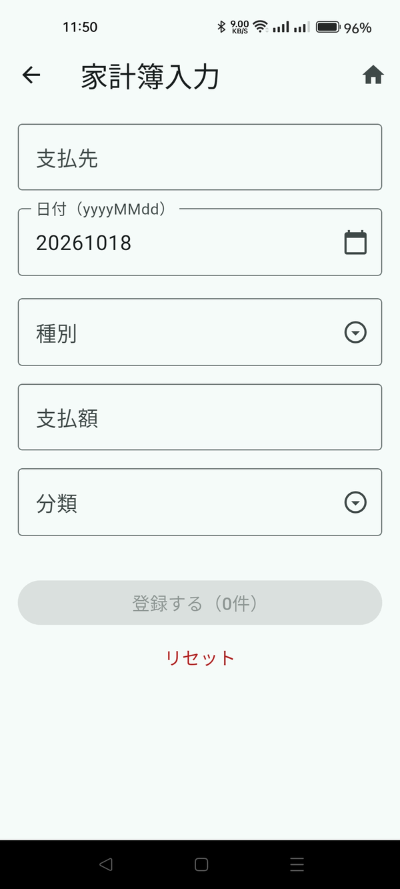
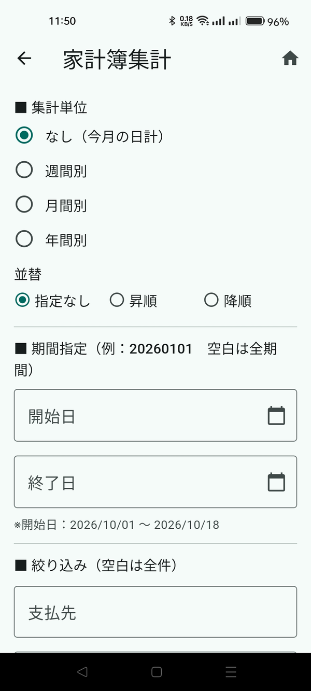
収入も記録する（多機能モード）
Record income too ("Full mode")
수입도 기록한다("다기능 모드")
也记录收入（“多功能模式”）
也記錄收入（「多功能模式」）
- ⚙設定の「家計簿のモード」で「多機能モード」を選びます。
- In ⚙ Settings, choose "Full mode" in "Budget mode".
- ⚙ 설정의 "가계부 모드"에서 "다기능 모드"를 선택합니다.
- 在⚙设置的“记账模式”里选择“多功能模式”。
- 在⚙設定的「記帳模式」裡選擇「多功能模式」。
- 「📝 家計簿入力」の上にある「支出／収入」で「収入」を選び、収入元・日付・種別・収入額などを入れます。
- Above "📝 Budget Entry", choose "Income" in the expense/income switch, and enter the income source, date, category, income amount and so on.
- "📝 예산 입력" 위에 있는 지출/수입 전환에서 "수입"을 선택하고 수입처・날짜・종류・수입액 등을 입력합니다.
- 在“📝 预算条目”上方的支出/收入切换里选择“收入”，输入收入来源・日期・类别・收入金额等。
- 在「📝 預算條目」上方的支出/收入切換裡選擇「收入」，輸入收入來源・日期・類別・收入金額等。
- 集計・編集・データ出力でも、収入が一緒に扱われます（集計では、「支出」「収入」「すべて」から選べます）。
- Totals, editing and data export also handle income together (in the summary you can choose "Expense", "Income" or "All").
- 집계・편집・데이터 내보내기에서도 수입이 함께 다루어집니다(집계에서는 "지출", "수입", "전체" 중에서 고를 수 있습니다).
- 统计・编辑・数据导出时，也会一并处理收入（统计时，可以从“支出”“收入”“全部”中选择）。
- 統計・編輯・資料匯出時，也會一併處理收入（統計時，可以從「支出」「收入」「全部」中選擇）。
- 画面の上には、今月の収入・支出・差し引きが出ます。「簡単モード」に戻しても、収入データは消えません。
- At the top of the screen, this month's income, expenses and balance are shown. Even if you go back to "Simple mode", your income data is not deleted.
- 화면 위쪽에는 이번 달 수입・지출・차감 잔액이 표시됩니다. "간단 모드"로 되돌려도 수입 데이터는 지워지지 않습니다.
- 画面上方会显示本月的收入・支出・结余。即使切换回“简单模式”，收入数据也不会消失。
- 畫面上方會顯示本月的收入・支出・結餘。即使切換回「簡單模式」，收入資料也不會消失。
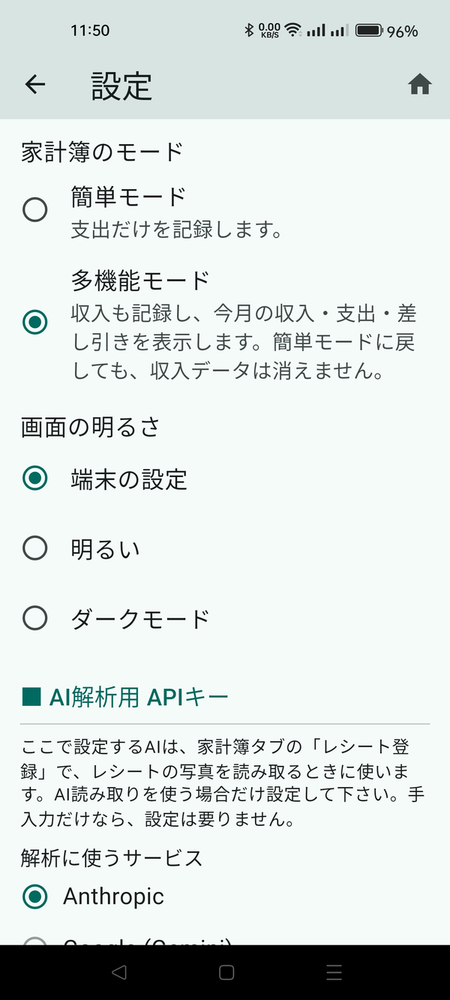
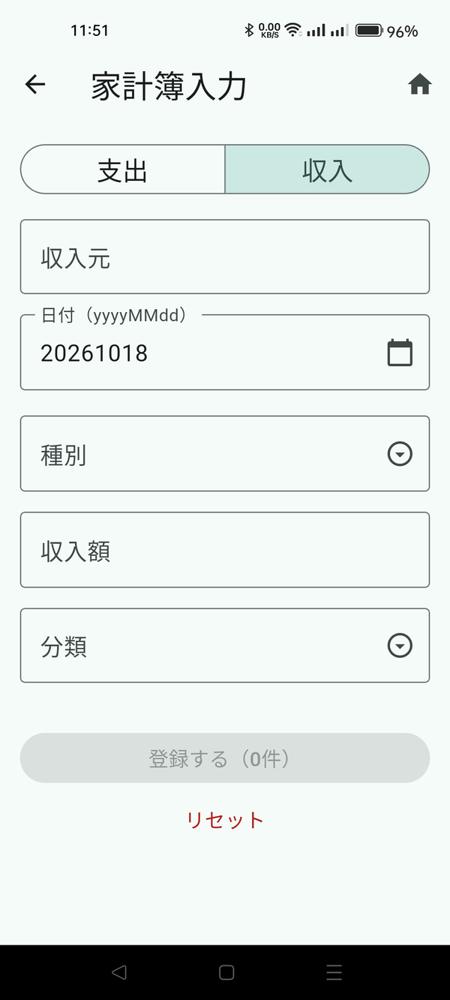
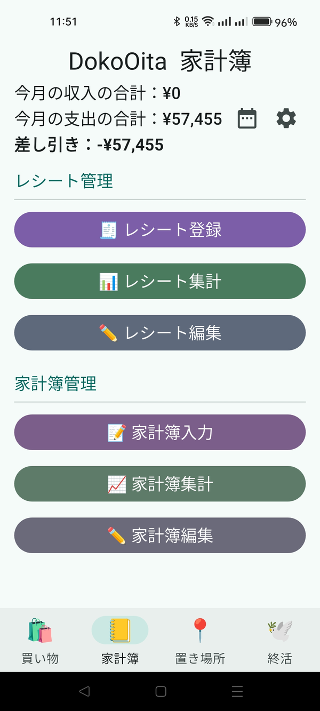
選べる項目の編集
Editing the choices
선택 항목 편집
编辑可选的项目
編輯可選的項目
- 入力欄の右の「▼」を押すと、種別や分類を一覧から選べます。
- If you press "▼" at the right of an input field, you can choose a category or classification from a list.
- 입력란 오른쪽의 "▼"를 누르면 종류나 분류를 목록에서 고를 수 있습니다.
- 按输入栏右边的“▼”，可以从列表中选择类别或分类。
- 按輸入欄右邊的「▼」，可以從列表中選擇類別或分類。
- その一覧の下の「この一覧を編集する」を押すと、項目を追加・削除したり、左の「≡」を動かして順番を変えたりできます（30個まで。「初期の状態に戻す」もあります）。「保存」を押すまでは変わりません。
- If you press "Edit this list" at the bottom of that list, you can add and delete items and change their order by moving the "≡" on the left (up to 30. There is also "Restore defaults"). Nothing changes until you press "Save".
- 그 목록 아래의 "이 목록 편집"을 누르면 항목을 추가・삭제하거나 왼쪽의 "≡"를 움직여 순서를 바꿀 수 있습니다(30개까지. "처음 상태로 되돌리기"도 있습니다). "저장"을 누를 때까지는 바뀌지 않습니다.
- 按该列表下面的“编辑此列表”，可以添加・删除项目，也可以移动左边的“≡”来改变顺序（最多30个。还有“恢复初始状态”）。按“保存”之前不会改变。
- 按該列表下面的「編輯此清單」，可以新增・刪除項目，也可以移動左邊的「≡」來改變順序（最多30個。還有「恢復初始狀態」）。按「儲存」之前不會改變。
- 項目を消しても、すでに入れたデータの言葉は変わりません。
- Even if you delete an item, the words in data you have already entered do not change.
- 항목을 지워도 이미 입력한 데이터의 말은 바뀌지 않습니다.
- 即使删除项目，已经输入的数据里的文字也不会改变。
- 即使刪除項目，已經輸入的資料裡的文字也不會改變。
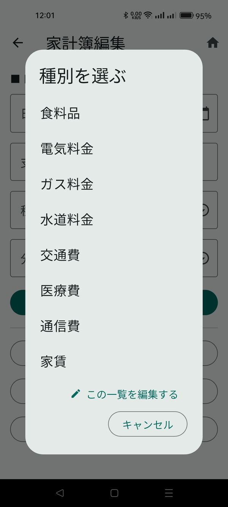
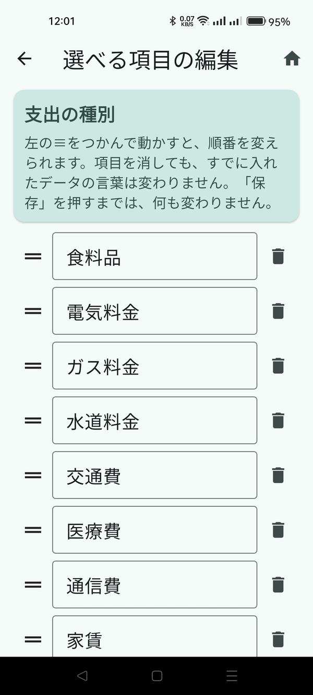
データ管理
Data management
데이터 관리
数据管理
資料管理
- 💾 データ出力：家計簿タブで⚙設定を開き、「データ出力」を押します。家計簿・レシートを、CSVやPDFで保存・共有できます。
- 💾 Data Export: on the Budget tab, open ⚙ Settings and press "Data Export". You can save or share the budget and receipts as CSV or PDF.
- 💾 데이터 내보내기: 가계부 탭에서 ⚙ 설정을 열고 "데이터 내보내기"를 누릅니다. 가계부・영수증을 CSV나 PDF로 저장・공유할 수 있습니다.
- 💾 数据导出：在记账标签页打开⚙设置，按“数据导出”。可以把记账・收据保存或分享为CSV或PDF。
- 💾 資料匯出：在記帳分頁開啟⚙設定，按「資料導出」。可以把記帳・收據儲存或分享為CSV或PDF。
- 画面の上に、今月の支出の合計が出ます。右の「📅」を押すと、開始日と終了日を入れて、期間を指定できます（アプリを閉じると今月に戻ります）。
- At the top of the screen, this month's total expenses are shown. If you press "📅" on the right, you can enter a start date and an end date to specify a period (when you close the app it returns to this month).
- 화면 위쪽에 이번 달 지출 합계가 표시됩니다. 오른쪽의 "📅"를 누르면 시작일과 종료일을 입력해서 기간을 지정할 수 있습니다(앱을 닫으면 이번 달로 돌아갑니다).
- 画面上方会显示本月支出的合计。按右边的“📅”，输入开始日和结束日，就能指定期间（关闭应用后会恢复为本月）。
- 畫面上方會顯示本月支出的合計。按右邊的「📅」，輸入開始日和結束日，就能指定期間（關閉應用程式後會恢復為本月）。
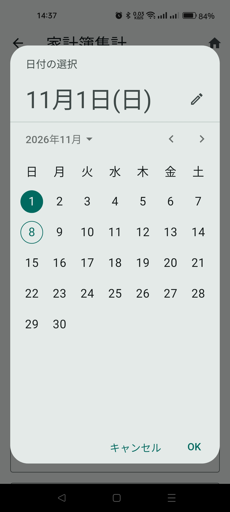
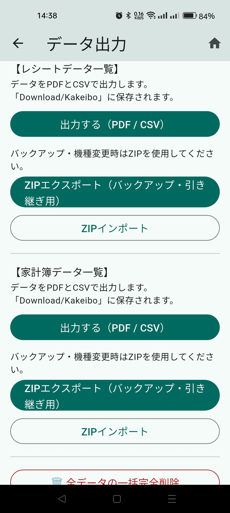
📍 置き場所
📍 Places
📍 장소
📍 地点
📍 地點
しまい込んだ物の場所を、写真で記録します。
You record where you put things away, with photos.
넣어 둔 물건의 장소를 사진으로 기록합니다.
用照片记录收起来的东西放在哪里。
用照片記錄收起來的東西放在哪裡。
- 📷カメラか🖼️ギャラリーで写真を選び、名前・置き場所・部屋・メモを入れます。
- Choose a photo with 📷 Camera or 🖼️ Gallery and enter the name, place, room and memo.
- 📷 카메라나 🖼️ 갤러리에서 사진을 고르고 이름・장소・방・메모를 입력합니다.
- 用📷相机或🖼️相册选择照片，输入名称・存放位置・房间・备注。
- 用📷相機或🖼️相簿選擇照片，輸入名稱・存放位置・房間・備註。
- 探すときは、上の検索欄に言葉を入れます。
- To search, type words in the search box at the top.
- 찾을 때는 위의 검색란에 말을 입력합니다.
- 查找时，在上方的搜索栏里输入文字。
- 搜尋時，在上方的搜尋欄裡輸入文字。
- 「並替」で、並び順を変えられます。
- With "Sort" you can change the order.
- "정렬"로 정렬 순서를 바꿀 수 있습니다.
- 用“排序”可以改变排列顺序。
- 用「排序」可以改變排列順序。
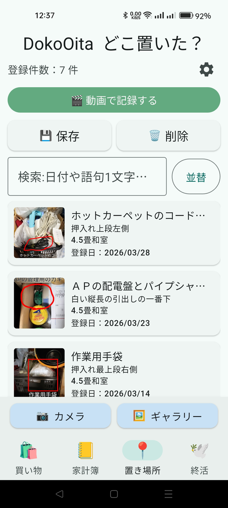
動画でも記録できる
You can also record with video
동영상으로도 기록할 수 있다
也可以用视频记录
也可以用影片記錄
- ホームの「🎬 動画で記録する」を押し、「録画開始」で録画、「停止」で終わります（最長60秒。録画の前に「縦で撮る」「横で撮る」を選べます）。そのあと、名前などを入れて「完了」で保存します。
- Press "🎬 Record with Video" on the home screen, then "Record" to record and "Stop" to finish (up to 60 seconds; before recording you can choose "Portrait" or "Landscape"). Then enter the name and so on and save with "Done".
- 홈의 "🎬 동영상으로 기록"을 누르고 "녹화 시작"으로 녹화, "정지"로 끝냅니다(최대 60초. 녹화 전에 "세로"와 "가로"를 고를 수 있습니다). 그다음 이름 등을 입력하고 "완료"로 저장합니다.
- 按首页的“🎬 用视频记录”，用“开始录制”录制，用“停止”结束（最长60秒。录制前可以选择“竖屏”或“横屏”）。然后输入名称等，按“完成”保存。
- 按首頁的「🎬 用影片記錄」，用「開始錄製」錄製，用「停止」結束（最長60秒。錄製前可以選擇「直式」或「橫式」）。然後輸入名稱等，按「完成」儲存。
- 動画は、一覧では最初の画面に▶が付いて出ます。詳細画面の「▶ 動画を再生」で、アプリの中で見られます。
- In the list, a video is shown with ▶ on its first frame. On the detail screen, "▶ Play Video" lets you watch it inside the app.
- 동영상은 목록에서 첫 화면에 ▶가 붙어서 나옵니다. 상세 화면의 "▶ 동영상 재생"으로 앱 안에서 볼 수 있습니다.
- 视频在列表中，会在第一帧画面上带有▶显示。在详情画面的“▶ 播放视频”里，可以在应用中观看。
- 影片在列表中，會在第一幀畫面上帶有▶顯示。在詳情畫面的「▶ 播放影片」裡，可以在應用程式中觀看。
- 動画は、スマホの動画フォルダ（Movies）の「DokoOita」に入ります。
- Videos are stored in "DokoOita" in your phone's video folder (Movies).
- 동영상은 휴대폰의 동영상 폴더(Movies)의 "DokoOita"에 저장됩니다.
- 视频保存在手机的视频文件夹（Movies）里的“DokoOita”中。
- 影片儲存在手機的影片資料夾（Movies）裡的「DokoOita」中。
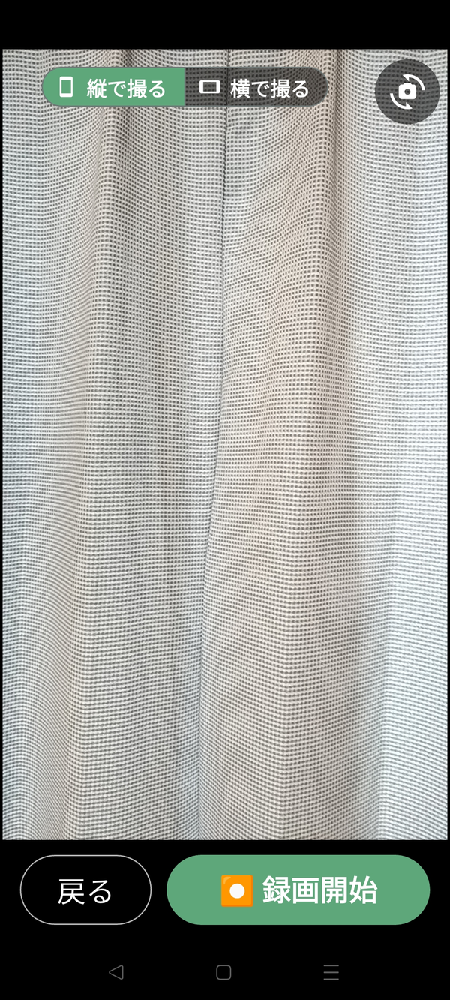
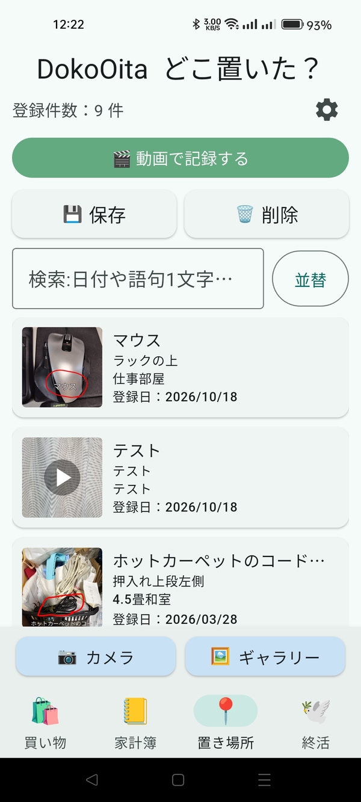
🕊️ 終活
🕊️ End-of-life
🕊️ 인생 정리
🕊️ 人生整理
🕊️ 人生整理
大切な物や、家族に伝えたいことを記録します。
You record important belongings and things you want to tell your family.
소중한 물건이나 가족에게 전하고 싶은 것을 기록합니다.
记录重要的物品和想对家人说的话。
記錄重要的物品和想對家人說的話。
入れる項目は、宛名・品名等・資産種別・伝言です。使い方は「置き場所」と同じです。
The fields are addressee, item details, asset type and message. It is used in the same way as "Places".
입력 항목은 수신인・품명 등・자산 종류・메시지입니다. 사용법은 "장소"와 같습니다.
输入项目有收件人・品名等・资产类别・留言。用法和“地点”相同。
輸入項目有收件人・品名等・資產類別・留言。用法和「地點」相同。
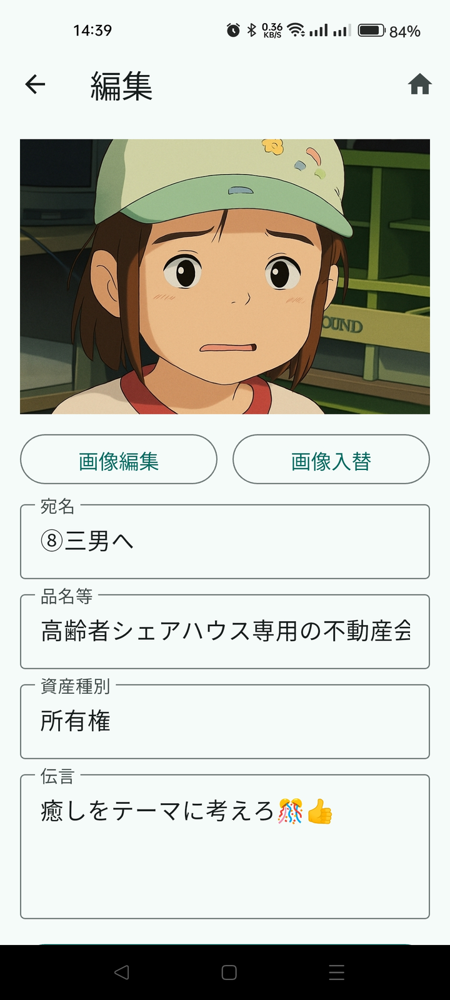
📷 新しく登録する流れ
📷 Adding something new
📷 새로 등록하는 순서
📷 新增登记的流程
📷 新增登錄的流程
置き場所・終活に、写真つきで登録する手順です。
These are the steps for registering in Places or End-of-life with a photo.
장소・인생 정리에 사진과 함께 등록하는 순서입니다.
这是在地点・人生整理里，附上照片进行登记的步骤。
這是在地點・人生整理裡，附上照片進行登記的步驟。
- カメラかギャラリーを押す📷カメラか🖼️ギャラリーを押します。Press Camera or GalleryPress 📷 Camera or 🖼️ Gallery.카메라나 갤러리를 누른다📷 카메라나 🖼️ 갤러리를 누릅니다.按相机或相册按📷相机或🖼️相册。按相機或相簿按📷相機或🖼️相簿。
- 写真を撮るか、選ぶ写真を撮るか、選びます。Take or choose a photoTake a photo or choose one.사진을 찍거나 고른다사진을 찍거나 고릅니다.拍照或选择照片拍照，或选择照片。拍照或選擇照片拍照，或選擇照片。
- 写真に文字や丸印を入れる文字や丸印を写真に入れたいときは、先に「画像編集」を押します（文字は音声入力もできます）。Add text or circles to the photoIf you want to put text or circles on the photo, first press "Edit image" (text can be entered by voice too).사진에 글자나 동그라미를 넣는다사진에 글자나 동그라미를 넣고 싶을 때는 먼저 "이미지 편집"을 누릅니다(글자는 음성 입력도 할 수 있습니다).在照片上加入文字或圆圈想在照片上加入文字或圆圈时，先按“编辑图片”（文字也可以语音输入）。在照片上加入文字或圓圈想在照片上加入文字或圓圈時，先按「編輯圖片」（文字也可以語音輸入）。
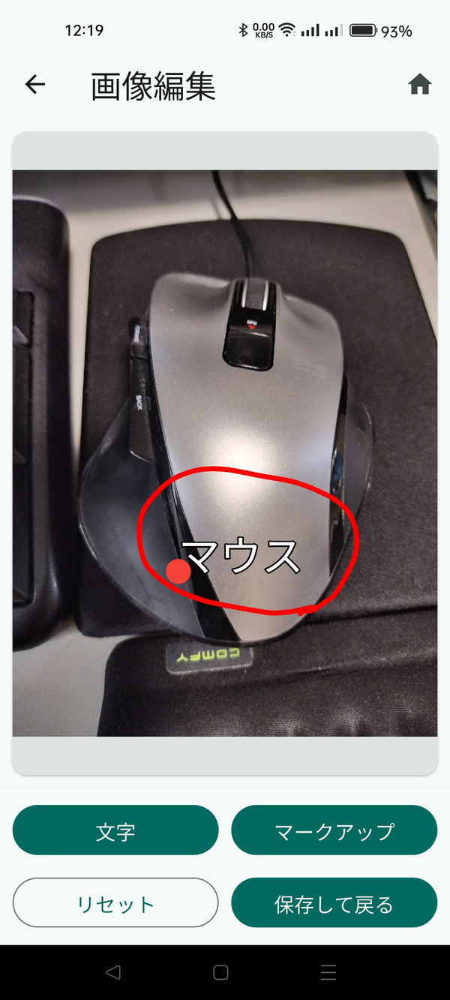
- 各項目を入れて「完了」各項目を入れて、「完了」で保存します。Fill in the fields and press "Done"Fill in each field and save with "Done".각 항목을 입력하고 "완료"각 항목을 입력하고 "완료"로 저장합니다.输入各项目后按“完成”输入各个项目，按“完成”保存。輸入各項目後按「完成」輸入各個項目，按「完成」儲存。
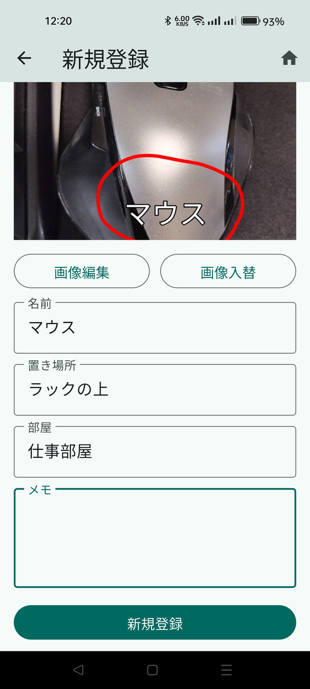
あわせて知っておくと便利なこと
Handy things to know
알아 두면 편리한 것
顺便了解一下，会更方便
順便了解一下，會更方便
- 同じ内容がすでにあるときは、「重複データがあります」と出ます。
- When the same content already exists, "Duplicate Data Found" appears.
- 같은 내용이 이미 있을 때는 "중복 데이터가 있습니다"라고 나옵니다.
- 已经有相同内容时，会显示“存在重复数据”。
- 已經有相同內容時，會顯示「有重複資料」。
- 登録したあとでも、「編集」の「画像入替」で写真を変えられます。
- Even after registering, you can change the photo with "Edit" → "Replace image".
- 등록한 뒤에도 "편집"의 "이미지 교체"로 사진을 바꿀 수 있습니다.
- 登记之后，也可以用“编辑”里的“替换图片”更换照片。
- 登記之後，也可以用「編輯」裡的「替換圖片」更換照片。
- 動画で登録するときは、ホームの「🎬 動画で記録する」を押します（置き場所・終活のタブ）。録画のあと、各項目を入れて「完了」で保存します。
- When registering with video, press "🎬 Record with Video" on the home screen (Places and End-of-life tabs). After recording, fill in each field and save with "Done".
- 동영상으로 등록할 때는 홈의 "🎬 동영상으로 기록"을 누릅니다(장소・인생 정리 탭). 녹화 후 각 항목을 입력하고 "완료"로 저장합니다.
- 用视频登记时，按首页的“🎬 用视频记录”（地点・人生整理标签页）。录制后，输入各项目，按“完成”保存。
- 用影片登記時，按首頁的「🎬 用影片記錄」（地點・人生整理分頁）。錄製後，輸入各項目，按「完成」儲存。
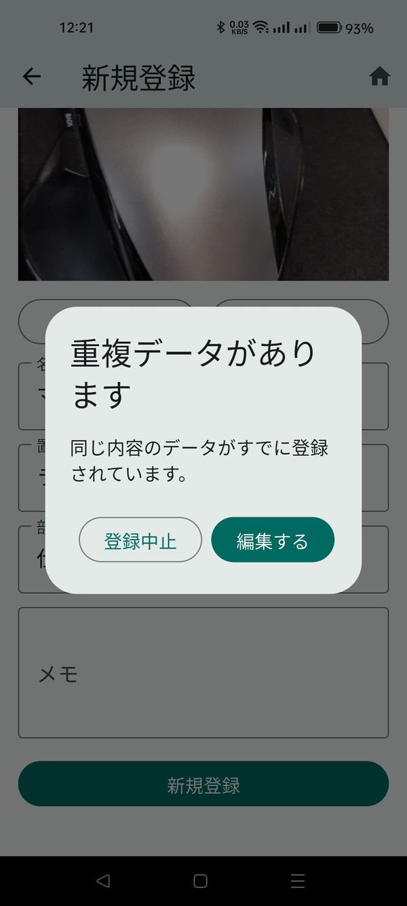
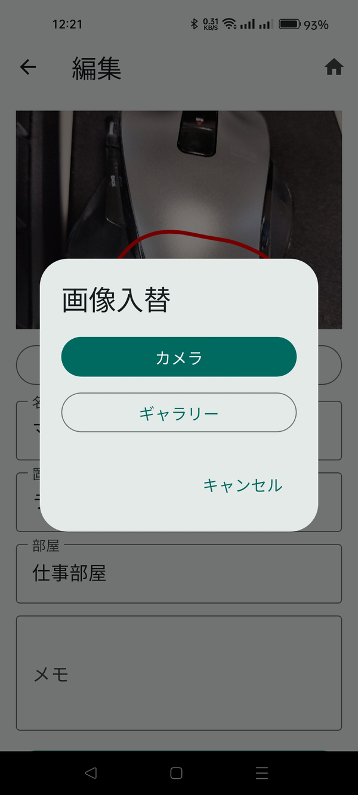
🏠 ホーム画面の使い方
🏠 Using the home screen
🏠 홈 화면 사용법
🏠 主页的使用方法
🏠 首頁的使用方法
検索・並替・保存・削除・設定です。
Search, sort, save, delete and settings.
검색・정렬・저장・삭제・설정입니다.
搜索・排序・保存・删除・设置。
搜尋・排序・儲存・刪除・設定。
- 【検索】登録した言葉（買い物では、カテゴリー名も）や、登録日（04・2026・202604・20260412のような数字）で探せます。漢字・ひらがな・カタカナは、どれで書いても見つかります（例：「乾パン」で登録した品物は、「かんぱん」「カンパン」でも見つかります）。この探し方は、ホームのほか、保存・削除・非表示リスト・買い物メモのチェック画面・家計簿とレシートの集計の検索欄でも使えます（1文字だけのときは、漢字とカナの読み替えはしません）。「コスモスORアルク」のように OR でつなぐと、複数の言葉を一度に探せます。
- [Search] You can search by registered words (for Shopping, category names too) or by registration date (digits such as 04, 2026, 202604 or 20260412). Kanji, hiragana and katakana are all found however you write them (for example, an item registered as "乾パン" is also found with "かんぱん" or "カンパン"). This way of searching can be used not only on the home screen but also in the search fields of Save, Delete, Hidden List, the check screen of the shopping memo, and the budget and receipt summaries (with only one character, kanji and kana are not interchanged). If you join words with OR, as in "Cosmos OR Alc", you can search for several words at once.
- [검색] 등록한 말(쇼핑에서는 카테고리 이름도)이나 등록일(04・2026・202604・20260412 같은 숫자)로 찾을 수 있습니다. 한자・히라가나・가타카나는 어느 쪽으로 써도 찾을 수 있습니다(예: "乾パン"이라고 등록한 품목은 "かんぱん", "カンパン"이라고 써도 찾을 수 있습니다). 이 찾기 방법은 홈 외에도 저장・삭제・숨김 목록・쇼핑 메모의 체크 화면・가계부와 영수증 집계의 검색란에서도 사용할 수 있습니다(한 글자만 입력했을 때는 한자와 가나를 바꿔 찾지 않습니다). "コスモスORアルク"처럼 OR로 이으면 여러 말을 한 번에 찾을 수 있습니다.
- 【搜索】可以用登记的文字（购物时也包括分类名称），或登记日期（04・2026・202604・20260412这样的数字）查找。汉字・平假名・片假名，无论用哪种写法都能找到（例如：登记为“乾パン”的商品，用“かんぱん”“カンパン”也能找到）。这种查找方式，除了首页，在保存・删除・隐藏列表・购物备忘的勾选画面・记账和收据统计的搜索栏里也可以使用（只有一个字时，不会进行汉字和假名的互换）。像“コスモスORアルク”这样用OR连接，可以一次查找多个词。
- 【搜尋】可以用登記的文字（購物時也包括分類名稱），或登記日期（04・2026・202604・20260412這樣的數字）搜尋。漢字・平假名・片假名，無論用哪種寫法都能找到（例如：登記為「乾パン」的商品，用「かんぱん」「カンパン」也能找到）。這種搜尋方式，除了首頁，在儲存・刪除・隱藏列表・購物備忘的勾選畫面・記帳和收據統計的搜尋欄裡也可以使用（只有一個字時，不會進行漢字和假名的互換）。像「コスモスORアルク」這樣用OR連線，可以一次搜尋多個詞。
- 【並替】検索欄の右の「並替」で、並び順を変えられます。
- [Sort] With "Sort" to the right of the search box, you can change the order.
- [정렬] 검색란 오른쪽의 "정렬"로 정렬 순서를 바꿀 수 있습니다.
- 【排序】用搜索栏右边的“排序”，可以改变排列顺序。
- 【排序】用搜尋欄右邊的「排序」，可以改變排列順序。
- 【保存】スマホ保存か共有（ZIP）で、バックアップを取ります。
- [Save] Make a backup by saving to the phone or sharing (ZIP).
- [저장] 휴대폰 저장이나 공유(ZIP)로 백업을 합니다.
- 【保存】用保存到手机或分享（ZIP）来做备份。
- 【儲存】用儲存到手機或分享（ZIP）來做備份。
- 【削除】いらないデータを選んで、または全部まとめて削除します。
- [Delete] Choose data you do not need and delete it, or delete everything at once.
- [삭제] 필요 없는 데이터를 골라서, 또는 전부 한꺼번에 삭제합니다.
- 【删除】选择不需要的数据删除，或者全部一起删除。
- 【刪除】選擇不需要的資料刪除，或者全部一起刪除。
- 【⚙設定】右上の⚙から開きます。
- [⚙ Settings] Open it from the ⚙ at the top right.
- [⚙ 설정] 오른쪽 위의 ⚙에서 엽니다.
- 【⚙设置】从右上角的⚙打开。
- 【⚙設定】從右上角的⚙開啟。
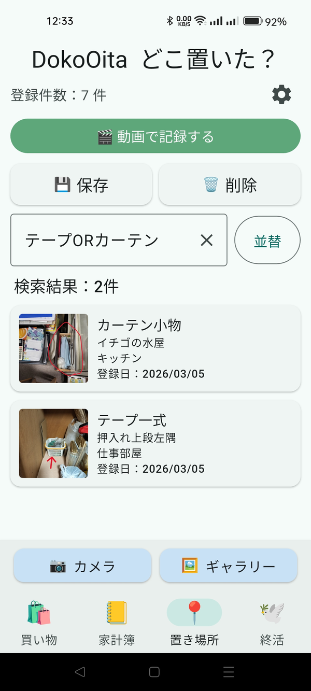
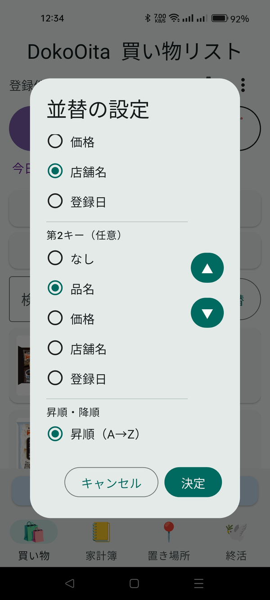
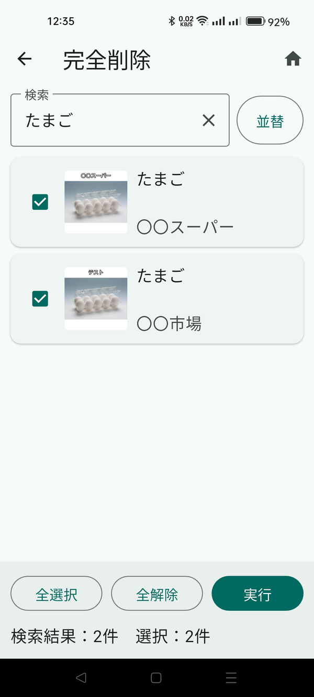
📄 詳細画面
📄 Detail screen
📄 상세 화면
📄 详情页面
📄 詳細畫面
一覧から1件を開いた画面です。
This is the screen when you open one entry from the list.
목록에서 한 건을 연 화면입니다.
这是从列表中打开一条数据的画面。
這是從列表中開啟一條資料的畫面。
- 写真をさわると、大きく見られます。
- Touch the photo to see it larger.
- 사진을 누르면 크게 볼 수 있습니다.
- 触摸照片，可以放大查看。
- 觸控照片，可以放大檢視。
- 左右になぞるか、◀▶で、前後のデータに移れます。
- Swipe left or right, or press ◀▶, to move to the previous or next entry.
- 좌우로 밀거나 ◀▶로 앞뒤 데이터로 이동할 수 있습니다.
- 向左右滑动，或按◀▶，可以移到前后的数据。
- 向左右滑動，或按◀▶，可以移到前後的資料。
- 「編集」で直せます。「削除」は元に戻せません。
- You can correct it with "Edit". "Delete" cannot be undone.
- "편집"으로 고칠 수 있습니다. "삭제"는 되돌릴 수 없습니다.
- 用“编辑”可以修改。“删除”无法撤销。
- 用「編輯」可以修改。「刪除」無法撤銷。
- 「共有」で、登録事項つきの写真を、LINEやメールで送れます。
- With "Share" you can send the photo with its registered details by LINE or e-mail.
- "공유"로 등록 사항이 들어간 사진을 LINE이나 이메일로 보낼 수 있습니다.
- 用“分享”，可以通过LINE或电子邮件发送附有登记事项的照片。
- 用「分享」，可以透過LINE或電子郵件傳送附有登記事項的照片。
- 動画の項目は、「▶ 動画を再生」で見られます。「共有」では、動画のファイルがそのまま送られます（全件のときはZIPにまとめて送ります）。
- For a video entry, "▶ Play Video" lets you watch it. "Share" sends the video file as it is (for all entries, they are bundled in a ZIP).
- 동영상 항목은 "▶ 동영상 재생"으로 볼 수 있습니다. "공유"에서는 동영상 파일이 그대로 전송됩니다(전체 건일 때는 ZIP으로 묶어서 보냅니다).
- 视频项目可以用“▶ 播放视频”观看。“分享”会原样发送视频文件（全部数据时，会打包成ZIP发送）。
- 影片項目可以用「▶ 播放影片」觀看。「分享」會原樣傳送影片檔案（全部資料時，會打包成ZIP傳送）。
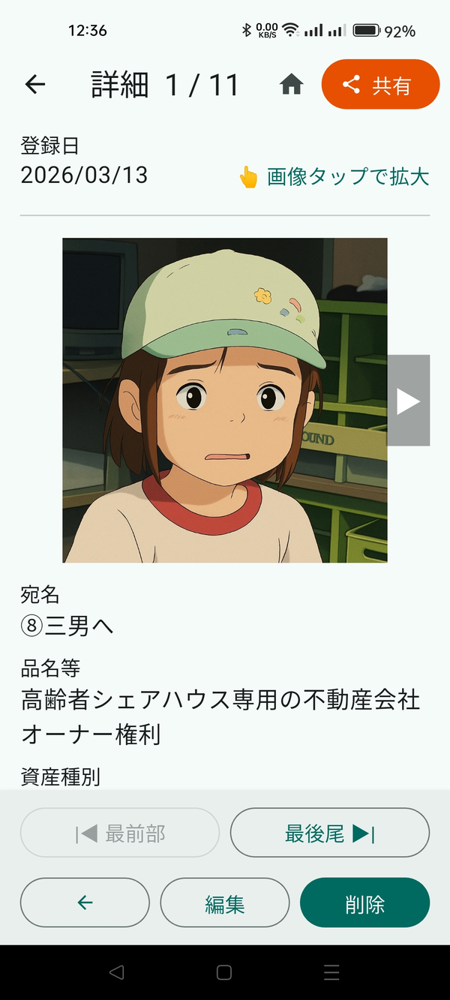
✏️ 項目一括編集（⚙設定）
✏️ Bulk Edit (⚙ Settings)
✏️ 항목 일괄 편집(⚙ 설정)
✏️ 项目批量编辑（⚙ 设置）
✏️ 項目批次編輯（⚙ 設定）
登録した言葉を、まとめて直せます。
You can correct registered words all at once.
등록한 말을 한꺼번에 고칠 수 있습니다.
可以一次性修改登记的文字。
可以一次性修改登記的文字。
- 対象と項目を選ぶ対象のデータと、直したい項目を選びます。Choose the target and the fieldChoose the target data and the field you want to change.대상과 항목을 고른다대상 데이터와 고치고 싶은 항목을 고릅니다.选择对象和项目选择对象数据，以及想修改的项目。選擇物件和項目選擇物件資料，以及想修改的項目。
- 言葉を入れる「検索文字列」に今の言葉、「置換文字列」に新しい言葉を入れます。Enter the wordsEnter the current word in "Search Text" and the new word in "Replace Text".말을 입력한다"텍스트 검색"에 지금의 말, "텍스트 바꾸기"에 새로운 말을 입력합니다.输入文字在“搜索文本”里输入现在的文字，在“替换文本”里输入新的文字。輸入文字在「搜尋文字」裡輸入現在的文字，在「替換文字」裡輸入新的文字。
- 検索して置換する「検索して置換」を押し、件数を確認してOKを押します。Search and replacePress "Search & Replace", check the number of matches, and press OK.검색해서 교체한다"검색 & 교체"를 누르고 건수를 확인한 뒤 확인을 누릅니다.搜索并替换按“搜索 & 替换”，确认数量后按确定。搜尋並替換按「搜尋 & 替換」，確認數量後按確定。
- 「置換文字列」を空白にすると、その言葉が消えます。
- If you leave "Replace Text" blank, that word is deleted.
- "텍스트 바꾸기"를 비워 두면 그 말이 지워집니다.
- 把“替换文本”留空，该文字就会被删除。
- 把「替換文字」留空，該文字就會被刪除。
- 「検索文字列」を空白にすると、空欄の項目に言葉を入れられます。
- If you leave "Search Text" blank, you can fill empty fields with a word.
- "텍스트 검색"을 비워 두면 빈 항목에 말을 넣을 수 있습니다.
- 把“搜索文本”留空，可以给空白的项目填入文字。
- 把「搜尋文字」留空，可以給空白的項目填入文字。
- 買い物では、項目に「カテゴリー」も選べます。カテゴリー名を直すと、お店のカテゴリーの一覧も同じように直ります。
- For Shopping, you can also choose "Categories" as the field. When you correct a category name, the store's category list is corrected in the same way.
- 쇼핑에서는 항목으로 "카테고리"도 고를 수 있습니다. 카테고리 이름을 고치면 매장의 카테고리 목록도 똑같이 바뀝니다.
- 购物时，项目里也可以选择“分类”。修改分类名称后，商店的分类列表也会同样修改。
- 購物時，項目裡也可以選擇「分類」。修改分類名稱後，商店的分類列表也會同樣修改。
- 買い物の店舗名を直すと、そのお店のカテゴリーの並びと、記憶した並び順も、新しい名前に引き継がれます。
- If you correct a store name in Shopping, that store's category order and remembered order are carried over to the new name.
- 쇼핑의 매장 이름을 고치면 그 매장의 카테고리 순서와 기억한 정렬 순서도 새 이름으로 이어집니다.
- 修改购物的店铺名称后，该商店的分类顺序和记住的排列顺序，也会沿用到新名称上。
- 修改購物的店鋪名稱後，該商店的分類順序和記住的排列順序，也會沿用到新名稱上。
💾 データの出力・読み込み（⚙設定）
💾 Export and import data (⚙ Settings)
💾 데이터 내보내기·가져오기(⚙ 설정)
💾 数据的导出与导入（⚙ 设置）
💾 資料的匯出與匯入（⚙ 設定）
データを書き出したり、読み込んだりします。
You write out data and read it in.
데이터를 내보내거나 가져옵니다.
导出数据，或导入数据。
匯出資料，或匯入資料。
- 【PDF・CSV】登録データを、スマホに保存したり、共有したりします（買い物には、カテゴリーの列も入ります）。
- [PDF / CSV] Save registered data to the phone or share it (for Shopping, a category column is included too).
- [PDF・CSV] 등록 데이터를 휴대폰에 저장하거나 공유합니다(쇼핑에는 카테고리 열도 들어갑니다).
- 【PDF・CSV】把登记的数据保存到手机，或分享出去（购物的数据里还包含分类列）。
- 【PDF・CSV】把登記的資料儲存到手機，或分享出去（購物的資料裡還包含分類列）。
- 【ZIPエクスポート】写真つきで、全データ（買い物のカテゴリーも）を書き出します。同じアプリを使う人に渡せます。
- [ZIP export] Write out all data with photos (including Shopping categories). You can hand it to someone who uses the same app.
- [ZIP 내보내기] 사진과 함께 모든 데이터(쇼핑의 카테고리도)를 내보냅니다. 같은 앱을 사용하는 사람에게 전달할 수 있습니다.
- 【ZIP导出】连同照片，导出全部数据（包括购物的分类）。可以交给使用同一个应用的人。
- 【ZIP匯出】連同照片，匯出全部資料（包括購物的分類）。可以交給使用同一個應用程式的人。
- 【ZIPインポート】受け取ったZIPを読み込みます。すでに入っているデータは、重ねて入りません。
- [ZIP import] Load a ZIP you received. Data that is already in the app is not added twice.
- [ZIP 가져오기] 받은 ZIP을 가져옵니다. 이미 들어 있는 데이터는 중복되어 들어가지 않습니다.
- 【ZIP导入】导入收到的ZIP。已经存在的数据，不会重复导入。
- 【ZIP匯入】匯入收到的ZIP。已經存在的資料，不會重複匯入。
- 家計簿・レシートの出力は、家計簿タブで⚙設定を開き、「データ出力」から行います。
- Budget and receipt data are exported from ⚙ Settings → "Data Export" while on the Budget tab.
- 가계부・영수증의 내보내기는 가계부 탭에서 ⚙ 설정을 열고 "데이터 내보내기"에서 합니다.
- 记账・收据的导出，请在记账标签页打开⚙设置，从“数据导出”进行。
- 記帳・收據的匯出，請在記帳分頁開啟⚙設定，從「資料導出」進行。
動画も、ZIPエクスポートに入ります（そのぶん、ファイルが大きくなります）。動画だけを共有することもできます（大きさと時間の確認が出ます）。
Videos are also included in the ZIP export (so the file becomes larger). You can also share only the videos (a confirmation of size and time appears).
동영상도 ZIP 내보내기에 들어갑니다(그만큼 파일이 커집니다). 동영상만 공유할 수도 있습니다(크기와 시간 확인이 나옵니다).
视频也会包含在ZIP导出里（文件也会相应变大）。也可以只分享视频（会显示大小和时间的确认）。
影片也會包含在ZIP匯出裡（檔案也會相應變大）。也可以只分享影片（會顯示大小和時間的確認）。